<!doctype html>
<html lang="en">
<head>
  <meta charset="utf-8">
  <meta name="viewport" content="width=device-width, initial-scale=1">
  <title>arxiv digest — 2026-10-29</title>
  <style>
:root {
  --bg: #ffffff;
  --fg: #1f2328;
  --muted: #59636e;
  --border: #d0d7de;
  --card: #f6f8fa;
  --link: #0969da;
}
body {
  max-width: 980px;
  margin: 0 auto;
  padding: 2rem 1rem 5rem;
  font-family: -apple-system, BlinkMacSystemFont, "Segoe UI", Helvetica, Arial, sans-serif;
  line-height: 1.55;
  color: var(--fg);
  background: var(--bg);
}
a { color: var(--link); }
img { max-width: 100%; height: auto; }
pre, code { background: var(--card); border-radius: 6px; }
pre { padding: 1rem; overflow-x: auto; }
blockquote { border-left: 4px solid var(--border); padding-left: 1rem; color: var(--muted); }
details { margin: 0.6rem 0; }
summary { cursor: pointer; font-weight: 600; }
.paper-figures-scroll {
  display: flex;
  gap: 1rem;
  overflow-x: auto;
  overscroll-behavior-x: contain;
  padding: 0.75rem 0.25rem 1rem;
  margin: 1rem 0 1.25rem;
  border-top: 1px solid var(--border);
  border-bottom: 1px solid var(--border);
  scroll-snap-type: x proximity;
}
.paper-figure-card {
  flex: 0 0 min(260px, 72vw);
  scroll-snap-align: start;
  background: var(--card);
  border: 1px solid var(--border);
  border-radius: 12px;
  padding: 0.55rem;
}
.paper-figure-card img {
  display: block;
  width: 100%;
  max-height: 240px;
  object-fit: contain;
  background: white;
  border-radius: 8px;
}
.paper-figure-caption {
  display: block;
  margin-top: 0.5rem;
  color: var(--muted);
  font-size: 0.85rem;
}
.figure-strip-hint {
  color: var(--muted);
  font-size: 0.9rem;
  margin-bottom: -0.3rem;
}
</style>
  <script>
    window.MathJax = {
      tex: {
        inlineMath: [['$', '$'], ['\\(', '\\)']],
        displayMath: [['$$', '$$'], ['\\[', '\\]']],
        processEscapes: true,
        processEnvironments: true
      },
      options: {
        skipHtmlTags: ['script', 'noscript', 'style', 'textarea', 'pre', 'code'],
        ignoreHtmlClass: 'tex2jax_ignore',
        processHtmlClass: 'tex2jax_process'
      }
    };
  </script>
  <script id="MathJax-script" async
    src="https://cdn.jsdelivr.net/npm/mathjax@3/es5/tex-chtml.js"></script>
</head>
<body>
<header style="background-color: #333; color: white; padding: 15px; margin-bottom: 20px;">
  <h1 style="margin: 0; font-size: 24px;">
    <a href="https://ochelpan.github.io/arXiv_clean/" style="color: white; text-decoration: none;">Main</a>
  </h1>
</header>

<h1>Daily arXiv Report</h1>

<hr>
<p>
<a href="index.html">← Index</a>
 · <a href="papers_01.html">← Previous</a> · <a href="papers_03.html">Next →</a>
</p>
<hr>

<h2>Papers 21–40</h2>
<p><a id="paper-2610.37491"></a></p>
<h3 id="adaptive-information-mining-approaching-the-quantum-limit-of-super-resolution-imaging"><a href="http://arxiv.org/abs/2610.37491v1">Adaptive Information Mining: Approaching the Quantum Limit of Super-Resolution Imaging</a></h3>
<p><strong>Authors:</strong> Seungman Choi, Peter Menart, Andrew Schramka, Zubin Jacob<br>
<strong>Type:</strong> theory · <strong>Category:</strong> other · <strong>PDF:</strong> <a href="https://arxiv.org/pdf/2610.37491v1">https://arxiv.org/pdf/2610.37491v1</a><br>
<strong>Analysis basis:</strong> full PDF text, analyzed in chunks
<strong>Topic relevance:</strong> 🔥 <code>quantum measurements</code> <strong>4/5</strong> · <code>interference shaping light</code> <strong>1/5</strong></p>
<div class="figure-strip-hint">↔ Scroll figures horizontally</div>
<div class="paper-figures-scroll">
<figure class="paper-figure-card">
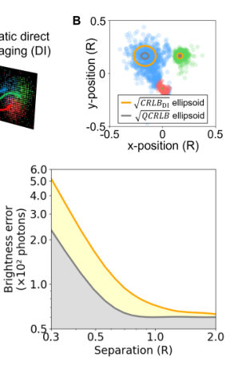
<figcaption class="paper-figure-caption"><b>Fig 1.</b> Fig. 1. Static direct imaging (DI) and the quantum limit. (A) Passive DI acquisition. (B, C) DI estimation performance for three sources with brightness ratio [1, 5, 20] (blue, green, and red) at a total photon budget of 14,000. Orange and gray line denote the theoretical performance of DI (√𝐶𝑅𝐿𝐵DI) and the quantum bound (√𝑄𝐶𝑅𝐿𝐵), respectively. (B) Monte Carlo simulations (500 trials) at a separation 0.33𝑅showing the distribution of DI estimates. (C) Theoretical precision of mean position and brightness versus source separation, normalized by the Rayleigh limit (R). The orange-shaded region marks the super-resolution regime, where information is lost to passive DI but remains theoretically...</figcaption>
</figure>
<figure class="paper-figure-card">
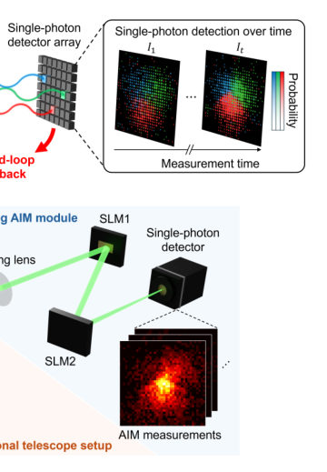
<figcaption class="paper-figure-caption"><b>Fig 2.</b> Fig. 2. Adaptive Information Mining (AIM) for sub-Rayleigh imaging. (A) AIM operating principle. The AIM module (𝚽𝑡) is adaptively modulated based on prior measurements to drive the subsequent measurement toward high-information states. (B) Temporally evolving AIM framework compared to conventional direct imaging (DI). Dual SLMs placed after the imaging lens enable adaptive, scene-dependent measurements for resolving sub-Rayleigh point sources.</figcaption>
</figure>
<figure class="paper-figure-card">
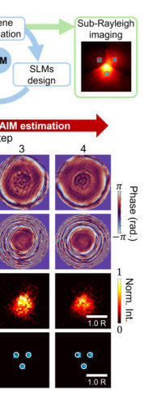
<figcaption class="paper-figure-caption"><b>Fig 3.</b> Fig. 3. Iterative workflow and temporal evolution of AIM estimation. (A) Closed-loop AIM workflow. An initial measurement is followed by a three-step iterative cycle— source estimation, information-driven SLM design, and subsequent measurement— enabling sub-Rayleigh imaging. (B) Temporal evolution of AIM estimation. Optimized dual-SLM phase masks Γ(1) and Γ(2), and corresponding measurements adapt over time to capture high-information states, enabling progressive convergence of estimated source positions (blue crosses) toward the ground truth (white circles).</figcaption>
</figure>
<figure class="paper-figure-card">
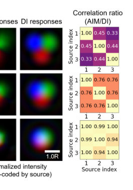
<figcaption class="paper-figure-caption"><b>Fig 4.</b> Fig. 4. Inter-source overlap suppression via AIM for a three point source scene with brightness ratios [1: 3: 6]. Columns 1-2: optimized SLM phase patterns after convergence for different separations. Columns 3-4: source-resolved responses under AIM and DI (color-coded). Columns 5: inter-source correlation matrices, where off- diagonal elements quantify inter-source correlation, highlighting the overlap reduction achieved by AIM.</figcaption>
</figure>
<figure class="paper-figure-card">
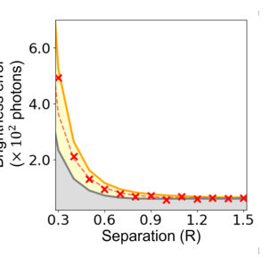
<figcaption class="paper-figure-caption"><b>Fig 5.</b> Fig. 5. Super-resolution performance of AIM using five sequential measurements, with position and brightness RMSE plotted as a function of source separation. Errors are averaged across three sources from 50 Monte Carlo trials per condition (Red cross). Yellow and red curves represent the classical CRLB for DI and AIM, respectively, while the gray curves denote the fundamental quantum CRLB. All results correspond to brightness ratios [1: 5: 20] and a total photon budget of 14,000. The total photon budget is equally distributed across each AIM measurement.</figcaption>
</figure>
</div>

<p><strong>Summary.</strong> This paper introduces Adaptive Information Mining (AIM), a novel framework for achieving super-resolution imaging by treating measurement design as an active optimization problem. By iteratively designing measurement patterns to maximize Fisher information, AIM overcomes the limitations of passive imaging, pushing estimation precision toward the fundamental quantum limit. This has practical implications for high-precision scientific instrumentation like astronomy.</p>
<p><strong>Why it may be interesting.</strong> This work provides a powerful, information-theoretic framework for active quantum measurement, which has parallels in quantum control and optimal state estimation in open quantum systems.</p>
<details>
<summary>Detailed structure</summary>
<p><strong>Main problem.</strong> The paper addresses the fundamental limitation of super-resolution imaging imposed by the Rayleigh limit, arguing it stems from sub-optimal measurement rather than intrinsic physics.</p>
<p><strong>Main result.</strong> The proposed Adaptive Information Mining (AIM) framework achieves super-resolution by actively designing sequential measurements to drive estimation error significantly closer to the fundamental quantum limit than traditional direct imaging.</p>
<p><strong>Method.</strong> AIM employs a closed-loop, information-driven cycle where the next measurement pattern is optimized to maximize the Fisher Information Matrix (FIM), thereby minimizing the uncertainty ellipsoid volume.</p>
<p><strong>Model / system.</strong> The system involves reconfigurable imaging hardware, specifically using Spatial Light Modulators (SLMs) to dynamically shape the measurement response for incoming photons from point sources.</p>
<p><strong>Key observables.</strong> Estimation error (RMSE), Fisher Information Matrix (FIM), Quantum Cramer-Rao Lower Bound (QCRLB), and the ability to estimate unknown source numbers or wavefront distortions.</p>
<p><strong>Important parameters / regimes.</strong> Super-resolution regime, deep sub-Rayleigh separation, photon count, and detector read noise levels.</p>
<p><strong>Assumptions / limitations.</strong> The core assumption is the ability to adaptively control the measurement system using reconfigurable interfaces (SLMs) based on current estimates.</p>
<p><strong>Figures summary.</strong> Figures compare AIM vs. Direct Imaging (DI) performance across varying source separations and photon counts, demonstrating AIM's superior convergence toward the quantum limit. Other figures illustrate the iterative process and turbulence compensation.</p>
<p><strong>Paper structure.</strong> The paper introduces the problem, details the AIM framework (iterative optimization using FIM maximization), presents results comparing AIM to DI under various noise and source conditions, and discusses extensions to turbulence and unknown source numbers.</p>
</details>
<details>
<summary>Abstract</summary>
<p>The "Rayleigh limit" is not an intrinsic property of light, but a consequence of sub-optimal measurement of collected photons by the imaging instrument. To overcome this limitation, we present Adaptive Information Mining, a framework that achieves super-resolution by using sequentially refined measurements for incoming photons. Our approach employs a reconfigurable imaging system that dynamically reshapes the instrument measurement responses to maximize the Fisher information and guide scene estimation toward the fundamental quantum limit, even in deep sub-Rayleigh regimes. We demonstrate that this approach achieves an estimation error 2-5 times closer to the fundamental quantum limit than traditional direct imaging when imaging point sources, without requiring any prior knowledge of their positions and brightnesses. Importantly, we demonstrate that AIM can be extended to fully blind multi-parameter estimation in scenarios involving an unknown number of sources or turbulence-induced wavefront distortions. Our approach addresses the limitations of conventional fixed imaging, offering a practical path toward quantum-limited super-resolution imaging.</p>
</details>
<p><sub><a href="#top">↑ back to top</a></sub></p>

<p><a id="paper-2610.37142"></a></p>
<h3 id="threshold-criteria-for-bosonic-and-fermionic-trimers-on-a-square-lattice-a-birman-schwinger-comparison"><a href="http://arxiv.org/abs/2610.37142v1">Threshold Criteria for Bosonic and Fermionic Trimers on a Square Lattice: A Birman--Schwinger Comparison</a></h3>
<p><strong>Authors:</strong> Janikul Abdullaev, Abdumalik Eshniyozov, Mikhail Dolgopolov<br>
<strong>Type:</strong> theory · <strong>Category:</strong> quantum gases · <strong>PDF:</strong> <a href="https://arxiv.org/pdf/2610.37142v1">https://arxiv.org/pdf/2610.37142v1</a><br>
<strong>Analysis basis:</strong> full PDF text, analyzed in chunks
<strong>Topic relevance:</strong> 🔥 <code>analog quantum simulation</code> <strong>4/5</strong> · <code>Keldysh / 2PI / non-Gaussian methods</code> <strong>1/5</strong></p>
<div class="figure-strip-hint">↔ Scroll figures horizontally</div>
<div class="paper-figures-scroll">
<figure class="paper-figure-card">
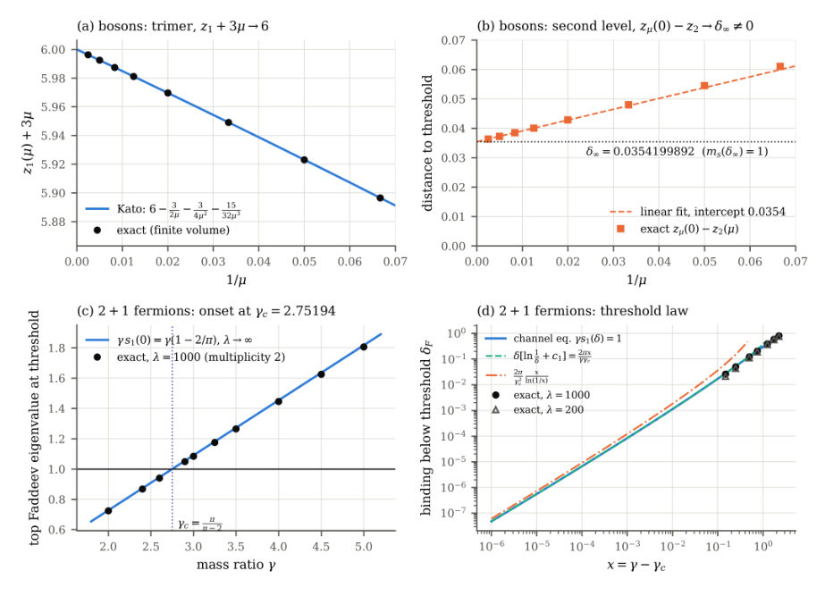
<figcaption class="paper-figure-caption"><b>Fig 1.</b> Figure 1: Bosonic and fermionic trimers on Z2 at K = 0. Markers show numerical Faddeev computations using a 32 × 32 momentum-grid discretization; curves show the corresponding asymptotic expansions or limiting channel equations. (a) Bosons: z1(µ)+3µ versus 1/µ and the leading Kato terms 6 −3</figcaption>
</figure>
</div>

<p><strong>Summary.</strong> This theoretical paper rigorously compares the existence and properties of three-body bound states in bosonic and fermionic lattice models using the Birman-Schwinger principle. It derives specific asymptotic formulas for the ground state energies and establishes a critical mass ratio for fermions. The findings offer deep insights into the spectral structure of few-body quantum systems relevant to ultracold atomic physics.</p>
<p><strong>Why it may be interesting.</strong> This work provides rigorous theoretical tools (Birman-Schwinger comparison) to analyze few-body quantum systems on lattices, which is highly relevant for understanding strongly interacting ultracold atomic gases (Bose-Einstein Condensates or Fermi gases) confined in optical lattices.</p>
<details>
<summary>Detailed structure</summary>
<p><strong>Main problem.</strong> The paper compares the threshold criteria for the existence and properties of three-particle bound states (trimers) in both bosonic and fermionic systems confined to a square lattice.</p>
<p><strong>Main result.</strong> For bosons, the analysis confirms two bound states below the two-particle threshold for large coupling. For fermions, a critical mass ratio $\gamma_c = \pi/(\pi - 2)$ determines the onset of a doubly degenerate bound state, with the binding energy following a linear-over-logarithmic law near this critical point.</p>
<p><strong>Method.</strong> The primary methodology involves applying the Birman-Schwinger principle, combined with symmetry reduction and strong-coupling asymptotic analysis of the Faddeev operator.</p>
<p><strong>Model / system.</strong> The models are three-particle systems on a square lattice: three identical bosons with attractive contact interactions, and a two-fermion plus one distinguishable particle system with attractive interspecies contact.</p>
<p><strong>Key observables.</strong> Ground-state energy asymptotics, the existence and location of bound states relative to the two-particle threshold, and the critical mass ratio $\gamma_c$.</p>
<p><strong>Important parameters / regimes.</strong> Coupling constants ($\mu$ for bosons, $\lambda$ for fermions), the critical ratio $\gamma_c \approx 2.75194$, and the lattice structure ($\mathbb{Z}^2$).</p>
<p><strong>Assumptions / limitations.</strong> The analysis relies on specific normalizations for interaction operators and utilizes approximations derived from the Birman-Schwinger framework, distinguishing between threshold resonances and genuine eigenvalues.</p>
<p><strong>Figures summary.</strong> Figures illustrate the asymptotic behavior of the bosonic ground state energy, the limiting gap $\delta_\infty$, and the threshold eigenvalue/binding energy for fermions as a function of coupling or mass ratio.</p>
<p><strong>Paper structure.</strong> The paper systematically compares the spectral analysis of the bosonic and fermionic Hamiltonians using the Birman-Schwinger method, deriving specific asymptotic formulas for the bound state energies in both cases.</p>
</details>
<details>
<summary>Abstract</summary>
<p>We compare two three-particle lattice models on the square lattice at total quasimomentum zero: three identical bosons with attractive contact interactions, and a two-fermion plus one distinguishable particle system with attractive interspecies contact. Using the Birman--Schwinger principle combined with symmetry reduction and strong-coupling asymptotics, we distinguish shared methodology from model-dependent spectral conclusions. For bosons, the ground-state energy behaves as minus three times the coupling plus six minus three over twice the coupling plus higher-order corrections, and exactly two bound states exist below the threshold for large coupling; the second lies at a finite distance 0.03542 below the threshold, a genuine eigenvalue rather than a threshold resonance. For fermions, the critical mass ratio is pi divided by pi minus two, approximately 2.75194; above it, a doubly degenerate level appears at strong coupling. Near onset, the binding energy follows a linear-over-logarithmic law. The results are compared with numerical finite-grid Faddeev computations and with recent three-dimensional classifications of threshold states.</p>
</details>
<p><sub><a href="#top">↑ back to top</a></sub></p>

<p><a id="paper-2610.37094"></a></p>
<h3 id="certification-time-for-weak-force-mediated-entanglement-between-levitated-particles"><a href="http://arxiv.org/abs/2610.37094v1">Certification Time for Weak-Force-Mediated Entanglement between Levitated Particles</a></h3>
<p><strong>Authors:</strong> Yao-Tong Chen, Salambo Dago, Oriol Romero-Isart, Andreu Riera-Campeny<br>
<strong>Type:</strong> theory · <strong>Category:</strong> other · <strong>PDF:</strong> <a href="https://arxiv.org/pdf/2610.37094v1">https://arxiv.org/pdf/2610.37094v1</a><br>
<strong>Analysis basis:</strong> full PDF text, analyzed in chunks
<strong>Topic relevance:</strong> 🔥 <code>quantum measurements</code> <strong>4/5</strong></p>
<div class="figure-strip-hint">↔ Scroll figures horizontally</div>
<div class="paper-figures-scroll">
<figure class="paper-figure-card">
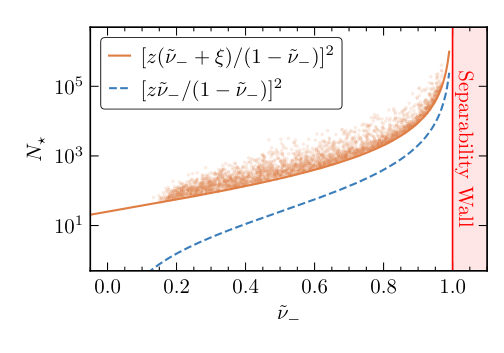
<figcaption class="paper-figure-caption"><b>Fig 1.</b> FIG. 1. Sample complexity N⋆for entanglement certification with z = 5 and isotropic readout noise ξ = 1. The orange solid line shows the attainable bound α ≥˜ν−+ ξ, while the blue dashed line repre- sents the unphysical noise-free benchmark ξ = 0. The points cor- respond to 4000 randomly sampled two-mode Gaussian states with symplectic eigenvalues λk drawn uniformly from [1,1.6]. The covari- ance matrix is constructed as V = Sdiag(λ1,λ1,λ2,λ2)ST, where S consists of two-mode squeezing with parameter uniformly sampled from [0,1], followed by local squeezing and rotations with param- eters independently sampled for each mode from [−1/2,1/2] and [0,π], respectively, and a beam-splitter...</figcaption>
</figure>
<figure class="paper-figure-card">
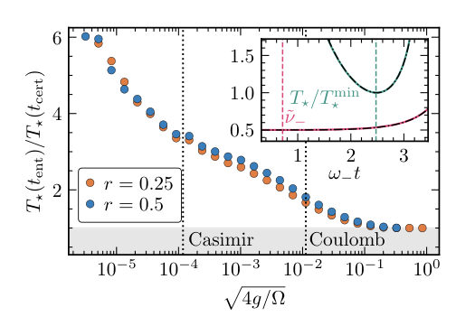
<figcaption class="paper-figure-caption"><b>Fig 2.</b> FIG. 2. Ratio T⋆(tent)/T⋆(tcert) as a function of the weak-coupling pa- rameter ε = p</figcaption>
</figure>
<figure class="paper-figure-card">
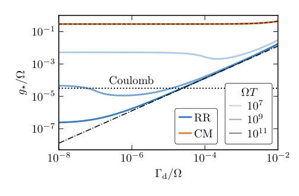
<figcaption class="paper-figure-caption"><b>Fig 3.</b> FIG. 3. Minimum certifiable coupling g⋆(T) as a function of the dark-diffusion rate for release–recapture (RR) at fixed release phase θ = π and continuous monitoring (CM) strategies, with z = 5 and for different total experimental times ΩT = 107,109, and 1011. The black dash-dotted line shows the weak-coupling entanglement- generation asymptote πΓd/ √</figcaption>
</figure>
</div>

<p><strong>Summary.</strong> This paper quantifies the time and measurement resources needed to certify entanglement generated by weak forces between levitated nanoparticles. It compares two measurement strategies—release--recapture versus continuous monitoring—and finds that release--recapture is significantly more efficient. The results highlight that the certification process itself imposes a fundamental constraint on the achievable entanglement measurement.</p>
<p><strong>Why it may be interesting.</strong> This work directly tackles the practical limitations of quantum state verification in physical systems, providing quantitative metrics for the feasibility of probing weak quantum interactions in trapped mechanical oscillators.</p>
<details>
<summary>Detailed structure</summary>
<p><strong>Main problem.</strong> The paper addresses the statistical challenge of certifying motional entanglement generated by weak forces between levitated nanoparticles using finite, noisy measurement records.</p>
<p><strong>Main result.</strong> Release--recapture protocols enable entanglement certification at interaction strengths significantly weaker than continuous monitoring, revealing a trade-off between entanglement generation and its certification time.</p>
<p><strong>Method.</strong> The authors treat certification as a statistical inference problem, deriving lower bounds on the required number of measurements ($N_\star$) and translating this into an experimental certification time ($T^\star$).</p>
<p><strong>Model / system.</strong> The system involves two identical massive particles levitated and interacting via a weak potential, analyzed using Gaussian state formalism and quantum estimation theory.</p>
<p><strong>Key observables.</strong> Entanglement witness ($    ilde{
u}<em>-$), required number of measurements ($N</em>\star$), and total certification time ($T^\star$).</p>
<p><strong>Important parameters / regimes.</strong> Measurement noise ($\xi$), weak-coupling parameter ($\epsilon$), and the distance from the separability threshold ($1-   ilde{
u}_-$).</p>
<p><strong>Assumptions / limitations.</strong> The analysis relies on asymptotic normality for large $N$ and assumes perfectly calibrated measurement noise.</p>
<p><strong>Figures summary.</strong> Figures compare the sample complexity $N_\star$ for entanglement certification across different noise levels and protocols, and show time scaling ratios between different measurement strategies.</p>
<p><strong>Paper structure.</strong> The paper develops theoretical bounds for $N_\star$ and $T^\star$ for both release--recapture and continuous monitoring protocols, deriving scaling laws in the weak-coupling limit and comparing the resulting certification thresholds.</p>
</details>
<details>
<summary>Abstract</summary>
<p>Certifying motional entanglement generated by weak forces between levitated nanoparticles requires distinguishing entangled from separable states using finite, noisy measurement records. We show that the number of measurements required to certify Gaussian entanglement can vary among equally entangled states, and quantify this variation. We derive an attainable lower bound showing that, near the separability threshold, the required number of measurements diverges inversely with the square of the distance from this threshold. We translate the required number of measurements into an experimental certification time, comparing two protocols under comparable experimental conditions: release--recapture, in which particles evolve freely before measurement, and continuous monitoring, in which the steady state is measured continuously. We find that release--recapture enables entanglement certification at interaction strengths several orders of magnitude weaker. Moreover, minimizing certification time can favor states with less entanglement, revealing a trade-off between entanglement generation and its certification. These results highlight the role of certification in the design and optimization of ongoing efforts to probe weak-force-mediated entanglement between levitated nanoparticles.</p>
</details>
<p><sub><a href="#top">↑ back to top</a></sub></p>

<p><a id="paper-2610.36525"></a></p>
<h3 id="minimal-projective-measurement-settings-for-estimating-multiple-observables"><a href="http://arxiv.org/abs/2610.36525v1">Minimal Projective Measurement Settings for Estimating Multiple Observables</a></h3>
<p><strong>Authors:</strong> Yibin Huang, Muchun Yang, D. L. Zhou<br>
<strong>Type:</strong> theory · <strong>Category:</strong> quantum information and computing · <strong>PDF:</strong> <a href="https://arxiv.org/pdf/2610.36525v1">https://arxiv.org/pdf/2610.36525v1</a><br>
<strong>Analysis basis:</strong> full PDF text, analyzed in chunks
<strong>Topic relevance:</strong> 🔥 <code>quantum measurements</code> <strong>4/5</strong></p>
<div class="figure-strip-hint">↔ Scroll figures horizontally</div>
<div class="paper-figures-scroll">
<figure class="paper-figure-card">
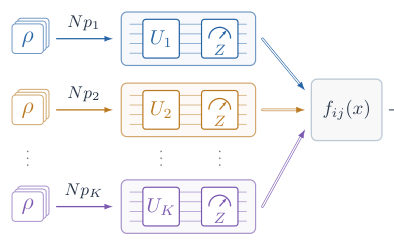
<figcaption class="paper-figure-caption"><b>Fig 1.</b> FIG. 1. Shared estimation with K fixed measurement set- tings. We assign Ni = Npi independent copies of the same state ρ to setting i. In setting i, we apply Ui and then perform an orthogonal projective measurement in the computational basis, indicated by the meter labeled Z. The double lines carry classical measurement outcomes. For every target Oj, we use the coefficients cijS collected in C to evaluate the es- timator function fij(x) in Eq. (7). We average these values separately for each setting, sum the contributions from all settings, and add the known identity component Tr(Oj)/d, as in Eq. (8). We use the same measurement data for all ob- servables. We show the first two and last...</figcaption>
</figure>
<figure class="paper-figure-card">
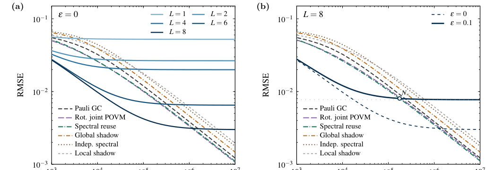
<figcaption class="paper-figure-caption"><b>Fig 2.</b> FIG. 2. Finite-depth measurements of 96 six-qubit observables. RMSE uses Eq. (14). (a) Clean targets from three structured 20-block circuits, measured in three settings with L = 1, 2, 4, 6, 8 blocks. (b) Perturbed targets at ϵ = 0.1, L = 8; the dashed blue reference uses the optimized clean instance. For shared designs, we fix the unitaries trained at N0 = 104 and optimize C, p at each evaluated N. Spectral reuse and Pauli GC use separately converged allocations at their evaluated budgets; lines connect these nodes as guides to the eye. Appendix A 8 reports the convergence checks. The dotted line and circle mark the perturbed residual floor and the observed crossover. The comparison uses...</figcaption>
</figure>
<figure class="paper-figure-card">
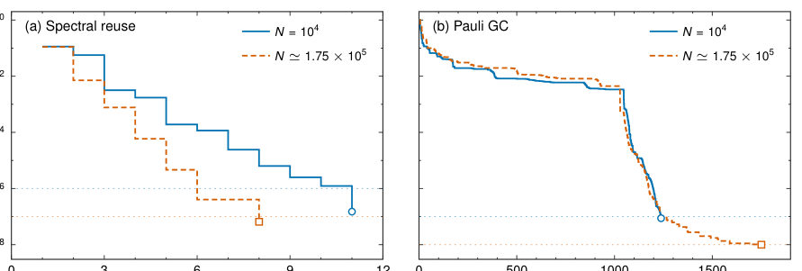
<figcaption class="paper-figure-caption"><b>Fig 3.</b> FIG. 3. Allocation convergence for the perturbed six-qubit targets (ϵ = 0.1): (a) spectral reuse and (b) Pauli GC. Both use fixed measurement bases and uniform initial allocation. The copy budgets are N = 104 and N = 175192; the latter is rounded in the legend. The vertical axis shows η = (U −L)/U, with U the best feasible MSE and L the accumulated first-order lower bound. The horizontal axis counts joint objective/gradient evaluations, including line-search and infeasible trial calls. Thin horizontal dotted lines show the selected tolerances in Table II. Open markers identify their first attainment, where the displayed traces end. The checks concern the allocation objective within each...</figcaption>
</figure>
</div>

<p><strong>Summary.</strong> This paper rigorously determines the minimum number of projective measurement settings needed to estimate multiple quantum observables accurately. By combining structural mathematical bounds with variational optimization techniques, the authors establish necessary and sufficient conditions for resource efficiency. This work is vital for designing optimal quantum measurement protocols in quantum information theory.</p>
<p><strong>Why it may be interesting.</strong> This work provides fundamental, rigorous bounds on the experimental resources (number of measurements) needed to characterize complex quantum systems, which is crucial for designing efficient quantum characterization protocols.</p>
<details>
<summary>Detailed structure</summary>
<p><strong>Main problem.</strong> The paper determines the minimum number of orthogonal projective measurement settings required to estimate the expectation values of multiple observables without bias for arbitrary input quantum states.</p>
<p><strong>Main result.</strong> For estimating the collective first and second moments of two qubits, the authors certify that exactly four projective measurement settings are necessary and sufficient.</p>
<p><strong>Method.</strong> The research combines deriving structural lower bounds (e.g., using alternating traces) with explicit constructions and optimizing the measurement settings and sample allocation using a classical variational algorithm.</p>
<p><strong>Model / system.</strong> The model involves quantum state estimation on a $d$-dimensional system using projective measurements defined by a set of unitaries $\{U_i\}$. The target observables are the traceless components of the set $\{O_j\}$.</p>
<p><strong>Key observables.</strong> The primary observables are the expectation values of multiple target observables $\{O_j\}_{j=1}^M$, and the diagnostic quantity is the average variance $\Gamma$.</p>
<p><strong>Important parameters / regimes.</strong> The key parameters include the dimension $d$, the number of observables $M$, and the minimum number of settings $K^\star(V)$.</p>
<p><strong>Assumptions / limitations.</strong> The analysis assumes a fixed-allocation, unbiased linear estimation model, and the variance formulas are derived assuming ideal measurements and Haar-random pure states.</p>
<p><strong>Figures summary.</strong> Figure 1 illustrates the shared estimation procedure using $K$ fixed measurement settings, detailing the data flow for calculating the estimated observables $\hat{o}_j$.</p>
<p><strong>Paper structure.</strong> The paper establishes the problem by defining the goal of minimizing $K$. It then develops structural lower bounds using theoretical tools (like alternating traces) and complements these with upper bounds derived from variational optimization techniques that jointly optimize unitaries, coefficients, and sample allocations.</p>
</details>
<details>
<summary>Abstract</summary>
<p>We study the minimum number of orthogonal projective measurement settings needed to estimate multiple observables without bias for arbitrary input states. We derive structural bounds that go beyond dimension counting and combine them with explicit constructions to certify minimum setting counts for selected target spaces. A classical variational algorithm searches for shared measurement bases and optimizes their readout coefficients and sample allocation. For the collective first and second moments of two qubits, we certify that four projective settings are necessary and sufficient. For this task, a numerically optimized four-setting design achieves a Haar-averaged variance within approximately $0.0341\%$ of a lower bound valid for any number of projective settings in our fixed-allocation, unbiased linear estimation model. Numerical examples show that shared measurements can improve precision relative to the comparison protocols. For finite-depth circuits, we account for reconstruction bias and identify finite-sample regimes in which this advantage persists.</p>
</details>
<p><sub><a href="#top">↑ back to top</a></sub></p>

<p><a id="paper-2610.36972"></a></p>
<h3 id="quantum-and-classical-memory-for-storage-and-retrieval-of-quantum-measurements"><a href="http://arxiv.org/abs/2610.36972v1">Quantum and Classical Memory for Storage and Retrieval of Quantum Measurements</a></h3>
<p><strong>Authors:</strong> Filip Turoboś, Ludmiła Marcinkowska, Zbigniew Puchała<br>
<strong>Type:</strong> theory · <strong>Category:</strong> quantum information and computing · <strong>PDF:</strong> <a href="https://arxiv.org/pdf/2610.36972v1">https://arxiv.org/pdf/2610.36972v1</a><br>
<strong>Analysis basis:</strong> full PDF text, analyzed in chunks
<strong>Topic relevance:</strong> 🔥 <code>quantum measurements</code> <strong>4/5</strong></p>
<div class="figure-strip-hint">↔ Scroll figures horizontally</div>
<div class="paper-figures-scroll">
<figure class="paper-figure-card">
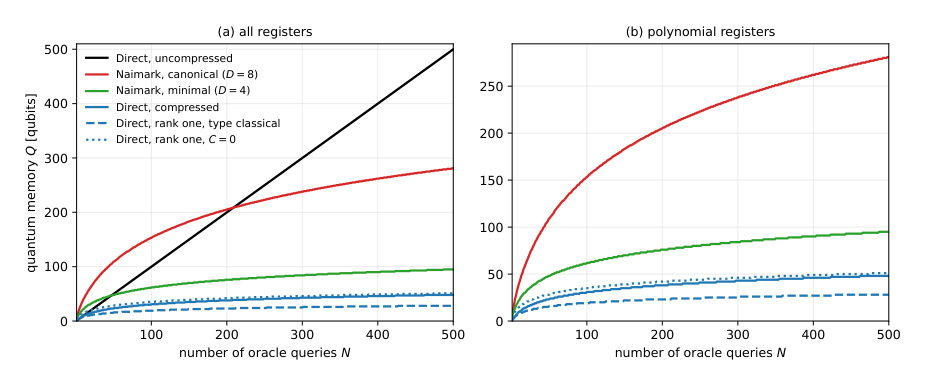
<figcaption class="paper-figure-caption"><b>Fig 1.</b> Figure 1: Quantum memory Q in qubits as a function of the number of oracle queries N for the qubit SIC POVM (d = 2, n = 4), exact constructions only: the uncompressed direct program (⌈N log2 d⌉, Proposi- tion 14), the compressed direct program (Proposition 16), its rank-one refinement with the type kept classical and with the type in the quantum register (Proposition 19), the canonical and minimal Naimark registers (Theorem 38), and the branch pPBT register (Theorem 44). The minimal Naimark and branch pPBT curves coincide because Dmin = n = 4 = 2d; the measured-branch registers of Proposition 46 and Corollary 47 coincide with the two rank-one direct curves because the raw readout has 2d = n...</figcaption>
</figure>
</div>

<p><strong>Summary.</strong> This paper rigorously analyzes the memory overhead required to store and retrieve the statistics of unknown quantum measurements (POVMs). By establishing lower bounds on quantum and classical memory resources, it quantifies the fundamental trade-offs between measurement fidelity, required memory size, and the number of outcomes. It is crucial for understanding the resource costs in quantum information processing.</p>
<p><strong>Why it may be interesting.</strong> This work provides fundamental resource bounds for quantum information processing tasks, directly impacting the theoretical limits of quantum measurement and quantum computation protocols.</p>
<details>
<summary>Detailed structure</summary>
<p><strong>Main problem.</strong> The paper investigates the minimum quantum and classical memory resources required for the exact heralded storage and retrieval of unknown quantum measurements (POVMs).</p>
<p><strong>Main result.</strong> It establishes lower bounds on the required memory ($Q+C \ge \log_2 n$) and shows that the optimal total-memory scaling is logarithmic in the number of outcomes ($n$) and the inverse of the success probability ($1/(1-p)$).</p>
<p><strong>Method.</strong> The authors use information-theoretic techniques, constructing exact compression schemes for the measurement program and deriving lower bounds by analyzing the required resources for universal retrieval processors.</p>
<p><strong>Model / system.</strong> The core model is the POVM measurement channel $\mathcal{M}$ acting on a $d$-dimensional system, accessed via a black-box oracle model. The analysis compares different physical implementations, such as direct program access versus structured representations like the Naimark dilation.</p>
<p><strong>Key observables.</strong> Quantum memory ($Q$ qubits), classical memory ($C$ bits), success probability ($p$), and the dimension of the required program register.</p>
<p><strong>Important parameters / regimes.</strong> Input dimension ($d$), number of outcomes ($n$), and the number of measurement uses ($N$).</p>
<p><strong>Assumptions / limitations.</strong> The analysis relies on the oracle model setting and compares explicit constructions, though it derives general lower bounds.</p>
<p><strong>Figures summary.</strong> The notes mention Figure 1 comparing $Q$ vs. $N$ for different memory types (all registers vs. polynomial registers) for the qubit SIC POVM.</p>
<p><strong>Paper structure.</strong> The paper progresses by defining the problem in the oracle model, deriving compression results, establishing lower bounds using information theory, and comparing the resource costs of various explicit retrieval protocols (direct, Naimark, branch decomposition).</p>
</details>
<details>
<summary>Abstract</summary>
<p>We study the persistent quantum and classical memory required for exact heralded storage and retrieval of quantum measurements. Given only black-box access to the measurement channel, we construct an exact compression of the port-based program into an outcome-type record and a quantum register, with total dimension polynomial in the query count. For every universal retrieval processor we prove the bounds $Q+C\ge\log_2 n$ and $2Q+C\ge\log_2\bigl((n-1)d^2+1\bigr)$ on the numbers $Q$ of qubits and $C$ of bits of the program, for $n$-outcome POVMs on $\mathbb{C}^d$ with $d\ge2$. For $n\ge2$, no finite classical memory removes the need for quantum memory: any such processor requires a quantum program of dimension at least $d$, at that dimension its classical alphabet must have at least $n$ symbols, and both minima are attained by a single-query protocol with success $1/d^2$. Combining direct-program compression with a converse from approximate measurement programming gives logarithmic total-memory scaling in $1/(1-p)$ as the uniform success probability $p$ approaches one, at fixed $d,n\ge2$. At fixed input dimension and target success below one, the optimal total-memory scaling is logarithmic in $n$. We also construct self-contained programs under branch-decomposition access and compare the quantum and classical costs of all constructions, including where the outcome-type record is kept: for POVMs with $n$ nonzero rank-one effects the direct program admits a purely quantum allocation whose register is never larger than that of the minimal-Naimark unitary program and which succeeds more often whenever $n>d$.</p>
</details>
<p><sub><a href="#top">↑ back to top</a></sub></p>

<p><a id="paper-2610.36385"></a></p>
<h3 id="finite-temperature-quantum-quasinormal-mode-theory-for-spatiotemporally-resolved-dissipative-cavity-quantum-magnonics"><a href="http://arxiv.org/abs/2610.36385v1">Finite-temperature Quantum Quasinormal Mode Theory for Spatiotemporally-resolved Dissipative Cavity Quantum Magnonics</a></h3>
<p><strong>Authors:</strong> Lars Meschede, Daniel D. A. Clarke, Ortwin Hess<br>
<strong>Type:</strong> theory · <strong>Category:</strong> other · <strong>PDF:</strong> <a href="https://arxiv.org/pdf/2610.36385v1">https://arxiv.org/pdf/2610.36385v1</a><br>
<strong>Analysis basis:</strong> full PDF text, analyzed in chunks
<strong>Topic relevance:</strong> <code>Keldysh / 2PI / non-Gaussian methods</code> <strong>3/5</strong> · <code>analog quantum simulation</code> <strong>3/5</strong> · <code>correlated / nonlocal dissipation</code> <strong>3/5</strong> · <code>driven-dissipative phase transition</code> <strong>3/5</strong> · <code>methods for driven-dissipative</code> <strong>3/5</strong> · <code>Tavis-Cummings &amp; cavity-many-emitter</code> <strong>2/5</strong> · <code>interference shaping light</code> <strong>2/5</strong> · <code>non-equilibrium universality</code> <strong>2/5</strong> · <code>quantum measurements</code> <strong>1/5</strong></p>
<div class="figure-strip-hint">↔ Scroll figures horizontally</div>
<div class="paper-figures-scroll">
<figure class="paper-figure-card">
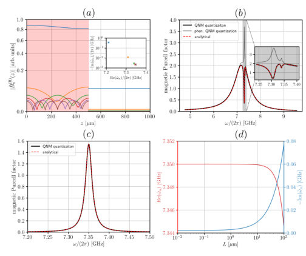
<figcaption class="paper-figure-caption"><b>Fig 1.</b> FIG. 1. Numerical investigation of a 1D YIG slab in 1D half-open space, magnetized in the positive z-direction with H0 = 1.5 Ms. (a) Magnetic flux density profiles | ˜B(R) n (z)| and complex frequencies ˜ωn of the lowest left circularly polarized QNMs for a slab of length LYIG = 500 µm. (b) Frequency- dependent magnetic Purcell factor for a QE positioned at the open end of the slab (z = LYIG), obtained from the full quan- tum QNM theory, the phenomenological QNM quantization scheme and the analytical treatment. (c) Corresponding mag- netic Purcell factor for a slab of length LYIG = 10 µm, calcu- lated from a single-mode (Kittel) expansion in the quantum QNM theory, compared with the...</figcaption>
</figure>
<figure class="paper-figure-card">
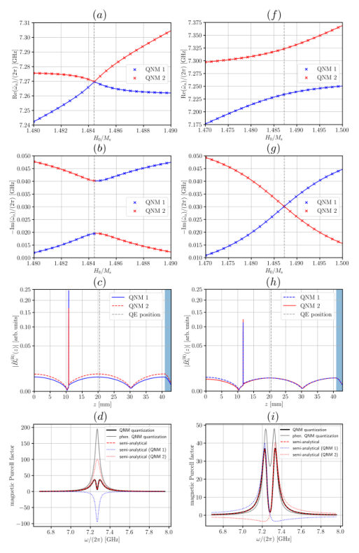
<figcaption class="paper-figure-caption"><b>Fig 2.</b> FIG. 2. Numerical investigation of a 1D YIG slab of length LYIG = 50 µm embedded in a half-open cavity of length Lcav = 40.860 mm, magnetized in the positive z-direction. The permittivity of the cavity material is defined by Eq. (51). The second-order mode of the cavity is tuned to the Kittel mode of the YIG slab, and those two QNMs are retained. Left column: Lair = 10.753 mm. Right column: Lair = 11.674 mm. (a),(f) Real parts of the QNM frequencies, Re(˜ωn), as a func- tion of bias field. (b),(g) Imaginary parts of the QNM frequen- cies, Im(˜ωn), as a function of bias field. (c),(h) QNM magnetic flux density profiles | ˜B(R) n (z)| at the bias fields H0 marked by the dashed lines in the...</figcaption>
</figure>
<figure class="paper-figure-card">
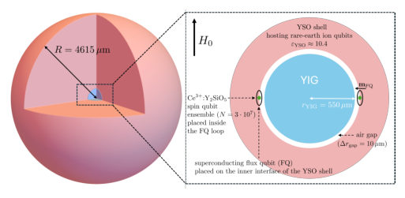
<figcaption class="paper-figure-caption"><b>Fig 3.</b> FIG. 4. Schematic representation of the investigated spher- ically symmetric, core-shell, hybrid photonic-magnonic res- onator device, comprising a YIG core and concentric YSO shell, together with embedded FQs and SQ ensembles. Rele- vant geometrical and physical parameters are indicated.</figcaption>
</figure>
<figure class="paper-figure-card">
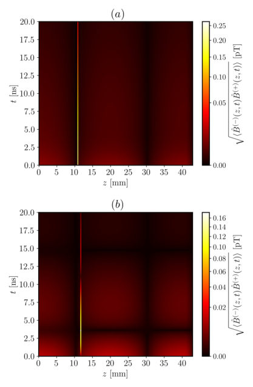
<figcaption class="paper-figure-caption"><b>Fig 4.</b> FIG. 3. Spatiotemporally-resolved magnetic flux-density am- plitude for the decay of the two-QNM Bell state |Ψ−⟩= (|0⟩|1⟩−|1⟩|0⟩)/ √</figcaption>
</figure>
<figure class="paper-figure-card">
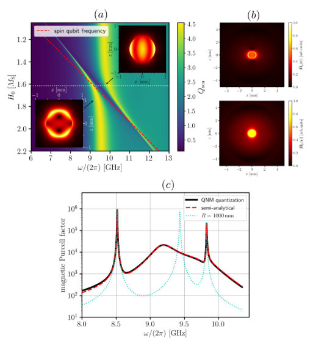
<figcaption class="paper-figure-caption"><b>Fig 5.</b> FIG. 5. Spatiospectral characterization of the hybrid photonic-magnonic resonator schematized in Fig. 4. (a) Scat- tering efficiency Qsca as a function of bias field H0 and frequency ω/(2π) for an incident, linearly polarized plane wave propagating along the positive z-direction. Addition- ally, the H0-dependent SQ transition frequency and the magnetic field strength profiles | ˜ H(R) n (r)| of two higher- order magnonic modes with complex frequencies ˜ωn/(2π) = (8.5159−0.0026i) GHz (lower left) and (9.8244−0.0035i) GHz (upper right) for the bias field H0 = 1.614 Ms (marked by the white dashed line) are shown. (b) Spatial magnetic field strength profiles | ˜ H(R) n | of the two hybridized...</figcaption>
</figure>
</div>

<p><strong>Summary.</strong> This paper introduces a rigorous, finite-temperature quantum theory for cavity quantum magnonics, addressing the long-standing theoretical difficulty of quantizing lossy, non-reciprocal magnetic resonators. By employing macroscopic quantum electrodynamics, the authors provide a unified framework to model complex interactions between magnons, photons, and qubits under realistic open-system and thermal conditions. This enables the quantitative design of advanced hybrid quantum devices.</p>
<p><strong>Why it may be interesting.</strong> This work is highly relevant as it provides a systematic, first-principles quantum framework for open, dissipative quantum systems, bridging the gap between classical magnetostatics and full quantum field theory in structured media.</p>
<details>
<summary>Detailed structure</summary>
<p><strong>Main problem.</strong> The primary challenge is developing a rigorous, unified quantum theory to describe dissipative cavity quantum magnonics, which must account for non-reciprocal media, material losses, open-cavity radiation, and finite-temperature effects.</p>
<p><strong>Main result.</strong> The authors present a finite-temperature quantum QNM theory that successfully quantizes the resonant modes for a wide class of complex, lossy, and dispersive cavity magnonic systems.</p>
<p><strong>Method.</strong> The theory is built upon macroscopic quantum electrodynamics and utilizes complex coordinate transformations to achieve a systematic quantization procedure for the quasinormal modes (QNMs).</p>
<p><strong>Model / system.</strong> The system involves coupling microwave photons, collective spin excitations (magnons), and superconducting/spin qubits within a single device architecture (cavity magnonics). The theory models the dynamics using principles derived from linearized magnetodielectric resonators.</p>
<p><strong>Key observables.</strong> Dissipative magnonic resonances (QNMs), modal interference effects, and magnon-mediated qubit synchronization.</p>
<p><strong>Important parameters / regimes.</strong> Finite temperature ($T$), non-reciprocity, material dissipation ($\alpha$), and coupling strengths between magnons, photons, and qubits.</p>
<p><strong>Assumptions / limitations.</strong> The theory builds upon macroscopic quantum electrodynamics and assumes the applicability of complex coordinate transformations to handle lossy, gyrotropic resonators, moving beyond ad hoc quantization schemes.</p>
<p><strong>Paper structure.</strong> The paper likely proceeds by first establishing the physical necessity for the new theory, then detailing the mathematical framework (MQED, complex transformations), demonstrating its application to specific hybrid resonators, and finally showcasing the predicted quantum phenomena at finite temperatures.</p>
</details>
<details>
<summary>Abstract</summary>
<p>Cavity quantum magnonics has ushered in an unprecedented era of hybrid light-matter interfaces in which microwave photons, collective spin excitations, and superconducting or spin qubits can be coupled within a single device architecture, facilitating a versatile platform for quantum information processing. Realizing their full potential, however, requires a theory that can treat non-reciprocal magnetic media, material dissipation and open-cavity radiation losses, as well as finite-temperature fluctuations rigorously and without significant approximation. The dissipative magnonic resonances of such systems are described as quasinormal modes (QNMs), yet a consistent quantization procedure for lossy gyrotropic resonators has remained elusive. In this work, we present a finite-temperature quantum QNM theory, based on macroscopic quantum electrodynamics for non-reciprocal media and complex coordinate transformations, that achieves QNM quantization for a wide class of spatially inhomogeneous, dissipative and dispersive, cavity magnonic systems. We demonstrate the predictive capabilities of our theory via applications to hybrid dielectric-magnonic resonators interacting with both spin and superconducting qubits, evidencing modal interference effects, a continuous transition from coherent to dissipative coupling, spatiotemporal quantum field dynamics, and magnon-mediated qubit synchronization, at both zero and finite temperatures. By addressing the intricacies of modal loss and non-reciprocity in a fully quantum theory of cavity magnonics, our approach enables the quantitative design of hybrid quantum devices that operate under realistic open-system and thermal conditions, without recourse to ad hoc quantization schemes.</p>
</details>
<p><sub><a href="#top">↑ back to top</a></sub></p>

<p><a id="paper-2610.36704"></a></p>
<h3 id="controlled-dark-state-energy-storage-and-work-extraction-in-v-type-quantum-batteries"><a href="http://arxiv.org/abs/2610.36704v1">Controlled Dark-State Energy Storage and Work Extraction in V-Type Quantum Batteries</a></h3>
<p><strong>Authors:</strong> Chia-Hung Chu, H. H. Jen<br>
<strong>Type:</strong> theory · <strong>Category:</strong> other · <strong>PDF:</strong> <a href="https://arxiv.org/pdf/2610.36704v1">https://arxiv.org/pdf/2610.36704v1</a><br>
<strong>Analysis basis:</strong> full PDF text, analyzed in chunks
<strong>Topic relevance:</strong> <code>Tavis-Cummings &amp; cavity-many-emitter</code> <strong>3/5</strong> · <code>driven-dissipative phase transition</code> <strong>3/5</strong> · <code>methods for driven-dissipative</code> <strong>3/5</strong> · <code>correlated / nonlocal dissipation</code> <strong>2/5</strong> · <code>non-equilibrium universality</code> <strong>2/5</strong> · <code>quantum measurements</code> <strong>2/5</strong> · <code>Keldysh / 2PI / non-Gaussian methods</code> <strong>1/5</strong> · <code>analog quantum simulation</code> <strong>1/5</strong> · <code>scars &amp; prethermalization</code> <strong>1/5</strong></p>
<div class="figure-strip-hint">↔ Scroll figures horizontally</div>
<div class="paper-figures-scroll">
<figure class="paper-figure-card">
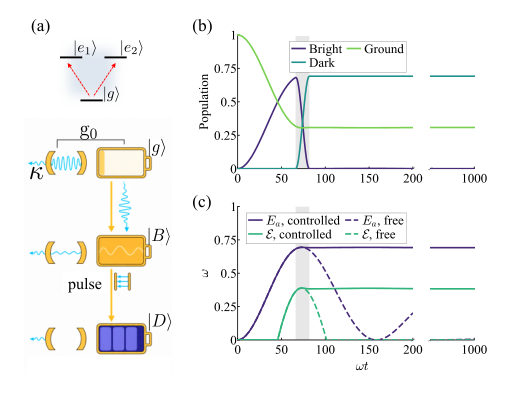
<figcaption class="paper-figure-caption"><b>Fig 1.</b> FIG. 1. Bright-to-dark storage. (a) V-type levels and the cavity-charging and pulse-capture sequence. (b) Bright, dark, and ground state populations for a single qutrit. (c) Atomic energy and ergotropy with the pulse (solid) and without it (dashed). The cavity initially prepared in a single photon Fock state |1⟩, while the qutrit is in the ground state |g⟩, with g0 = 0.02ω and κ = 0.01ω. The gray interval marks a pulse with δ = 0.2ω, duration π/δ, and centered at ωtc = 74, where tc = (ton+toff)/2. Panels (b,c) show the time evolution in a range of 0 ≤ωt ≤200 and 950 ≤ωt ≤1000, separated by an axis break.</figcaption>
</figure>
<figure class="paper-figure-card">
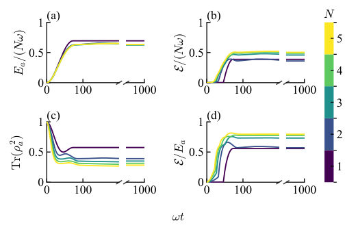
<figcaption class="paper-figure-caption"><b>Fig 2.</b> FIG. 2. Stored energy and extractability as the battery size increases. Time evolution of (a) atomic energy per qutrit, (b) ergotropy per qutrit, (c) atomic purity, and (d) extractable fraction for N-qutrits battery with input Fock states |N⟩, N = 1, . . . , 5 indicated by the shared colorbar. Parameters are g0 = 0.02ω, κ = 0.01ω, and δ = 0.2ω, with bright-peak timing for each N. The windows for time evolution are chosen as 0 ≤ωt ≤200 and 950 ≤ωt ≤1000, for short- and long- time limits.</figcaption>
</figure>
<figure class="paper-figure-card">
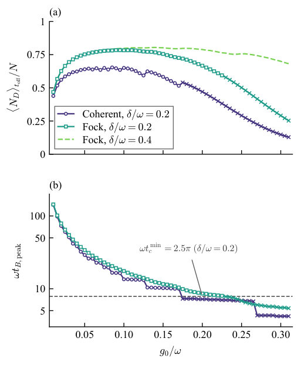
<figcaption class="paper-figure-caption"><b>Fig 3.</b> FIG. 3. Capture and the charging timescale. (a) Captured dark population for input Fock and coherent state at δ = 0.2ω; the dashed curve for input Fock state at δ = 0.4ω is a reference for faster conversion. All pulses have area π. (b) Free evolution bright-peak times for the two initial states, shown on a logarithmic time axis. The dashed horizontal line is the minimum pulse-center time for δ = 0.2ω. Crosses in both panels replace the corresponding circle or square when the peak precedes that line and ton = 0. Parameters are N = 3 and κ = 0.01ω, with 61 samples of g0 scanned from [0.01, 0.31]ω.</figcaption>
</figure>
<figure class="paper-figure-card">
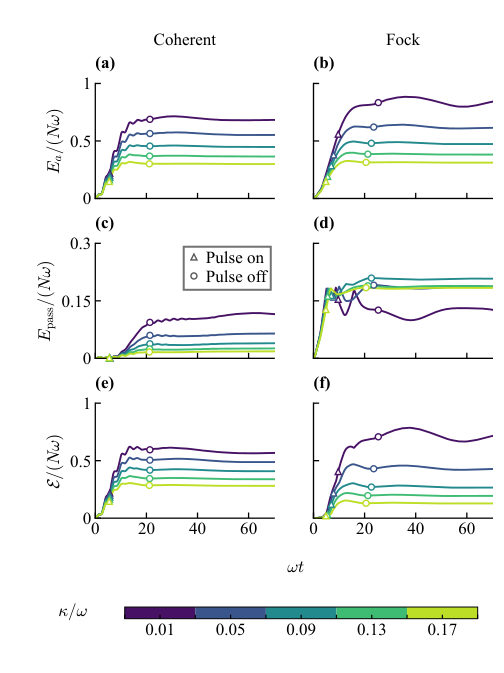
<figcaption class="paper-figure-caption"><b>Fig 4.</b> FIG. 4. Finite-time energy and extractable work under cav- ity loss. The left and right columns correspond to coherent- state and Fock-state inputs, respectively. The rows show (a,b) atomic energy Ea, (c,d) passive energy Epass = Ea −E, and (e,f) ergotropy E, all normalized by Nω. The shared color- bar indicates the cavity loss rate κ/ω. Triangles and open circles mark the pulse-on and pulse-off times, respectively, along each trajectory. Note the reduced vertical scale for the passive-energy panels. Parameters are N = 3, g0 = 0.1ω, and δ = 0.2ω, with the same nominal input energy of 3ω for both initial preparations. The pulse timing is determined sep- arately for each case using the...</figcaption>
</figure>
<figure class="paper-figure-card">
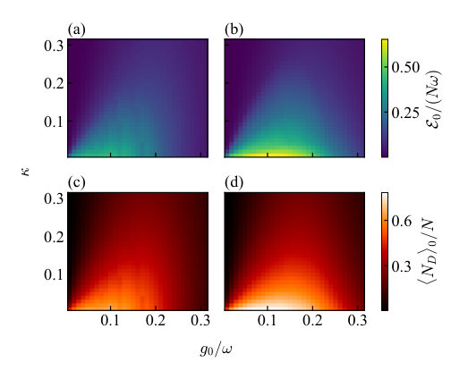
<figcaption class="paper-figure-caption"><b>Fig 5.</b> FIG. 5. Stationary extractable work and protected dark- state population. The left and right columns correspond to coherent-state and Fock-state inputs, respectively. Pan- els (a,b) show the zero-mode-projected atomic ergotropy E0/(Nω), while panels (c,d) display the normalized dark-state population ⟨ˆ ND⟩0 /N, which equals its value at pulse-off due to conservation. Each row shares a common color scale across both preparations. Parameters are N = 3 and δ = 0.2ω, with pulse timing determined by the bright-peak criterion on a 31×31 parameter grid, where g0/ω,κ/ω = 0.01, 0.02,. . . , 0.31. All 961 parameter points are evaluated for each preparation, and cell colors represent the calculated...</figcaption>
</figure>
</div>

<p><strong>Summary.</strong> This paper analyzes a quantum battery using V-type qutrits coupled to a cavity, focusing on protecting stored energy via dark-state population trapping. By controlling the system dynamics with tailored pulses, the authors demonstrate a pathway to extract useful work efficiently. The results highlight a trade-off between initial state preparation (coherent vs. Fock) and the type of extractable work measured (finite-time vs. stationary).</p>
<p><strong>Why it may be interesting.</strong> This work directly addresses fundamental questions in open quantum systems, specifically how controlled coherent dynamics can protect quantum resources (energy) against dissipation while enabling high-efficiency work extraction.</p>
<details>
<summary>Detailed structure</summary>
<p><strong>Main problem.</strong> The paper investigates the controlled storage of energy and the subsequent extraction of useful work from a quantum battery system.</p>
<p><strong>Main result.</strong> Controlled dark-state population trapping protects stored energy, and the extractable work can approach the stored energy in the thermodynamic limit.</p>
<p><strong>Method.</strong> The study uses theoretical simulations solving the Lindblad master equation to model the time evolution of the coupled atom-cavity system.</p>
<p><strong>Model / system.</strong> The system consists of an ensemble of N V-type qutrits coupled to a lossy cavity, described by a Hamiltonian including cavity, atomic, and interaction terms, and evolving under dissipation.</p>
<p><strong>Key observables.</strong> Atomic energy ($E_a$), passive energy ($E_{	ext{pass}}$), ergotropy ($E$), and protected dark-state population ($\langle \hat{N}_D 
angle$).</p>
<p><strong>Important parameters / regimes.</strong> The number of atoms ($N$), cavity loss rate ($\kappa$), and the strength/duration of the splitting pulse ($\delta(t)$).</p>
<p><strong>Assumptions / limitations.</strong> The analysis assumes Markovian dissipation and relies on symmetry arguments (excited-state exchange and ensemble permutation) to derive energy bounds.</p>
<p><strong>Figures summary.</strong> Figures compare energy, passive energy, and ergotropy for coherent vs. Fock initial states, showing differences between finite-time and stationary work extraction.</p>
<p><strong>Paper structure.</strong> The paper develops the model, details the dark-state storage protocol using controlled pulses, analyzes the energy bounds based on symmetry, and compares the performance of different initial state preparations (coherent vs. Fock) for work extraction.</p>
</details>
<details>
<summary>Abstract</summary>
<p>The performance of a quantum battery depends not only on its ability to retain stored energy against unwanted discharge but also on the amount of useful work that can be extracted from it. Here, we investigate these complementary aspects in an ensemble of V-type qutrits coupled to a lossy cavity. By applying a finite splitting pulse to the two excited states of each qutrit, cavity-bright excitations are converted into atomic dark states, whose populations remain protected upon restoring degeneracy, even while the light-matter coupling remains active. Simulations with finite-duration pulses reveal a capture window governed by the competition among energy transfer, bright-to-dark conversion, and photon leakage. We further show that if the energy is stored in the fully symmetric atomic subspace, the passive energy is bounded by twice the transition energy for number of atoms $N\geq2$. Consequently, if the stored energy scales extensively with $N$, the ratio of extractable work to stored energy approaches unity in the thermodynamic limit. Comparing different initial preparations at equal mean input energy, we find that coherent-state can yield greater finite-time ergotropy despite capturing less energy, whereas Fock-state favors greater extractable work in the stationary component. Our results demonstrate how controlled dark-state population trapping in an atom-cavity coupled system can protect stored energy while providing a conditional route toward high extractable work.</p>
</details>
<p><sub><a href="#top">↑ back to top</a></sub></p>

<p><a id="paper-2610.37293"></a></p>
<h3 id="experimental-evidence-for-quantum-brownian-motion-in-electron-metal-decoherence"><a href="http://arxiv.org/abs/2610.37293v1">Experimental evidence for quantum Brownian motion in electron-metal decoherence</a></h3>
<p><strong>Authors:</strong> Wayne Cheng-Wei Huang, Zilin Chen, Herman Batelaan<br>
<strong>Type:</strong> experiment · <strong>Category:</strong> other · <strong>PDF:</strong> <a href="https://arxiv.org/pdf/2610.37293v1">https://arxiv.org/pdf/2610.37293v1</a><br>
<strong>Analysis basis:</strong> full PDF text, analyzed in chunks
<strong>Topic relevance:</strong> <code>correlated / nonlocal dissipation</code> <strong>3/5</strong> · <code>quantum measurements</code> <strong>3/5</strong> · <code>Keldysh / 2PI / non-Gaussian methods</code> <strong>2/5</strong> · <code>driven-dissipative phase transition</code> <strong>2/5</strong> · <code>interference shaping light</code> <strong>2/5</strong> · <code>methods for driven-dissipative</code> <strong>2/5</strong> · <code>analog quantum simulation</code> <strong>1/5</strong> · <code>non-equilibrium universality</code> <strong>1/5</strong> · <code>quantum optics experiment</code> <strong>1/5</strong></p>
<div class="figure-strip-hint">↔ Scroll figures horizontally</div>
<div class="paper-figures-scroll">
<figure class="paper-figure-card">
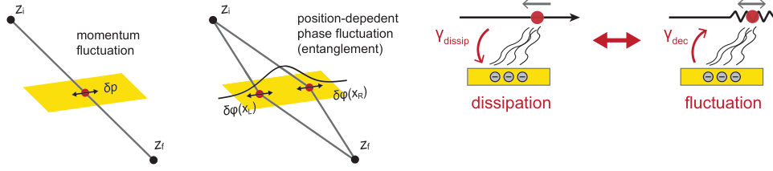
<figcaption class="paper-figure-caption"><b>Fig 1.</b> FIG. 1. Classical and quantum Brownian motion. a, Classically, a free electron traveling above a metallic surface induces a moving image charge. Joule heating from the interaction between the image charge and ionic lattice dissipates the electron and incurs momentum fluctuation δp. Quantum mechanically, a free electron wave induces a distribution of image charges. Position-dependent phase fluctuation δφ(x) entangles electron position states with local image charges, causing a loss in the phase correlation among electron position states and leading to motional decoherence. b, In both classical and quantum Brownian motion, the dissipating force Fdrag and the fluctuating force Fth are...</figcaption>
</figure>
<figure class="paper-figure-card">
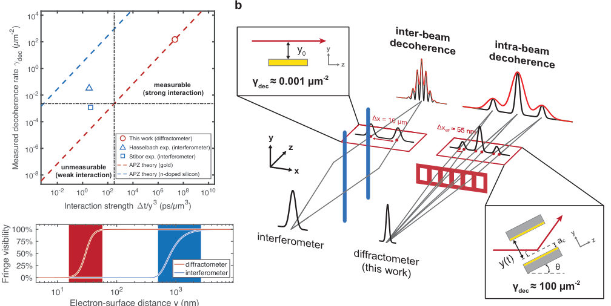
<figcaption class="paper-figure-caption"><b>Fig 2.</b> FIG. 2. Measurability of electron-metal decoherence in inter-beam and intra-beam decoherence experiments. a, Measurability diagram. The APZ theory (gold) becomes measurable for interaction strength above ∆t/y3 ≈320 ps/µm3</figcaption>
</figure>
<figure class="paper-figure-card">
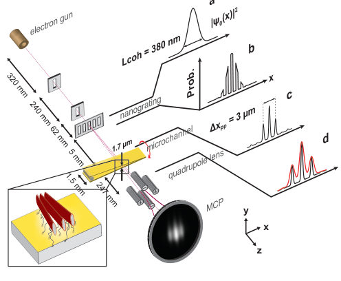
<figcaption class="paper-figure-caption"><b>Fig 3.</b> FIG. 3. Electron-gold decoherence experiment with an electron diffractometer. a, The input electron wavepacket has a Gaussian profile ψ0(x) = e−4x2/L2 coh. b, The wavepacket is sliced and diffracted as it transmits through the nanograt- ing. c, The diffracted electron waves are sent into a gold- plated microchannel tilted at an angle θ. Right before the microchannel, the separation between first-order electron wavepackets is ∆xpp = 3 µm. d, After the electron waves exit the microchannel, there is a homogeneous width broadening on all diffraction orders (red solid line). The reference diffrac- tion pattern in the absence of the microchannel is shown for comparison (black solid line). The...</figcaption>
</figure>
<figure class="paper-figure-card">
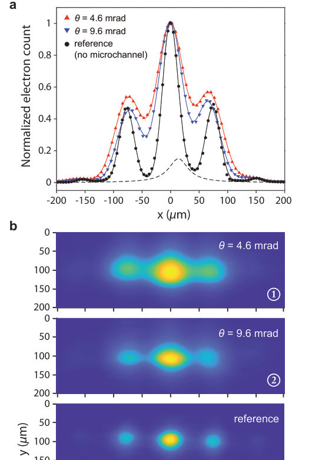
<figcaption class="paper-figure-caption"><b>Fig 4.</b> FIG. 4. Experimental electron diffraction patterns. a, Comparison between electron diffraction patterns obtained with and without the microchannel in the beam path. The reference diffraction pattern (black dot) with the Lorentzian background (black dashed line) removed has fringe visibility V = 96 %. Interaction with the microchannel results in peak width broadening and fringe visibility loss that vary with the microchannel tilt angle θ (red and blue triangles). Asym- metric inward displacement of the first-order peaks is likely caused by lensing from the image charge, which gives negli- gible broadening to the diffraction peaks. The displacement associated with lensing is removed before...</figcaption>
</figure>
<figure class="paper-figure-card">
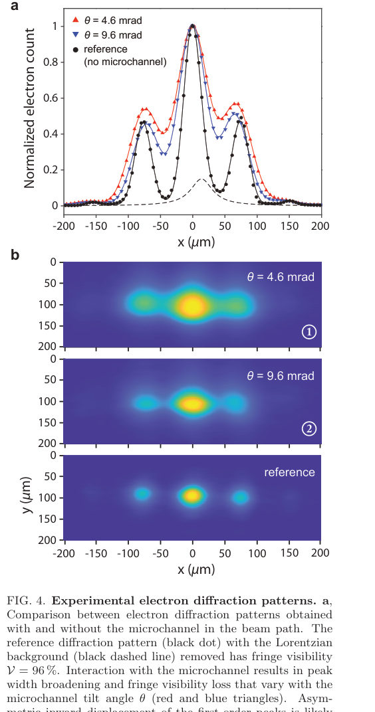
<figcaption class="paper-figure-caption"><b>Fig 5.</b> Fig. 3 using the path-integral simulation. On the screen</figcaption>
</figure>
</div>

<p><strong>Summary.</strong> This research experimentally verifies the role of quantum Brownian motion in decohering electron wave packets as they interact with metal surfaces. By employing electron diffractometers, the authors measure decoherence rates with unprecedented tunability. This establishes free-electron systems as a viable, controllable platform for studying fundamental open quantum dynamics.</p>
<p><strong>Why it may be interesting.</strong> This work directly addresses open quantum systems by providing a measurable platform (free-electron quantum optics) to test fundamental dissipation theories like Caldeira-Leggett, which is highly relevant to understanding decoherence mechanisms in quantum devices.</p>
<details>
<summary>Detailed structure</summary>
<p><strong>Main problem.</strong> The paper investigates the critical role of quantum Brownian motion in causing decoherence of electron motional states as they interact with metallic surfaces.</p>
<p><strong>Main result.</strong> The authors provide clear experimental signatures of electron-metal decoherence and demonstrate its continuous tunability using electron diffractometers, confirming the theoretical predictions of the Anglin-Paz-Zurek proposal.</p>
<p><strong>Method.</strong> The experiment uses electron diffractometers to measure intra-beam decoherence, contrasting this with traditional inter-beam interferometry setups.</p>
<p><strong>Model / system.</strong> The system involves an electron beam passing near a gold-plated microchannel, where decoherence arises from entanglement between the electron's position and image charges induced by the metal surface, governed by quantum Brownian motion theory (Caldeira-Leggett).</p>
<p><strong>Key observables.</strong> Fringe visibility ($V$) loss, homogeneous width broadening in diffraction patterns, and the decoherence rate ($\gamma_{dec}$)</p>
<p><strong>Important parameters / regimes.</strong> Electron-surface distance ($y$), effective interaction strength ($\Delta t/y^3$), and the microchannel tilt angle ($   heta$)</p>
<p><strong>Assumptions / limitations.</strong> The use of diffractometers is assumed to effectively isolate intra-beam decoherence from spurious effects that plague single-beam measurements.</p>
<p><strong>Figures summary.</strong> Figures illustrate the link between classical and quantum Brownian motion, compare decoherence detection in inter-beam vs. intra-beam setups, and show the experimental setup using the microchannel.</p>
<p><strong>Paper structure.</strong> The paper establishes the theoretical background (APZ proposal, quantum Brownian motion), details the experimental setup using electron diffractometers, presents measurements showing tunable decoherence rates, and concludes by validating the theory against experimental data.</p>
</details>
<details>
<summary>Abstract</summary>
<p>Feynman once remarked that the double-slit experiment has in its heart the only mystery of quantum mechanics. Arguably, the scientific significance of double-slit experiments lies in motional decoherence and the mechanism behind it. Decoherence of motional states underpins our understanding of quantum-to-classical transition. It is also central to the operation of miniaturized quantum electron devices and poses a resolution limit for electron microscopes. In this work, we provide experimental evidence for the critical role of quantum Brownian motion in electron motional decoherence. We demonstrate, for the first time, clear signatures of electron-metal decoherence and its continuous tunability. Our experiment concludes a two-decade long search for experimental realization of the Anglin-Paz-Zurek proposal, establishing electron-microchannel systems as viable open quantum platforms for free-electron quantum optics. The quantitative agreement between experiment and theory further paves the way for testing the Caldeira-Leggett quantum dissipation theory with free electrons.</p>
</details>
<p><sub><a href="#top">↑ back to top</a></sub></p>

<p><a id="paper-2610.36686"></a></p>
<h3 id="robustness-of-anyonic-time-domain-interference-against-dephasing"><a href="http://arxiv.org/abs/2610.36686v1">Robustness of Anyonic Time-Domain Interference Against Dephasing</a></h3>
<p><strong>Authors:</strong> Hai-Dong Li, Hao-Xiang Long, Gu Zhang, D. Y. Xing, Wei Chen<br>
<strong>Type:</strong> theory · <strong>Category:</strong> strongly correlated electrons · <strong>PDF:</strong> <a href="https://arxiv.org/pdf/2610.36686v1">https://arxiv.org/pdf/2610.36686v1</a><br>
<strong>Analysis basis:</strong> full PDF text, analyzed in chunks
<strong>Topic relevance:</strong> <code>Full counting statistics</code> <strong>3/5</strong> · <code>correlated / nonlocal dissipation</code> <strong>3/5</strong> · <code>interference shaping light</code> <strong>3/5</strong> · <code>Keldysh / 2PI / non-Gaussian methods</code> <strong>2/5</strong> · <code>methods for driven-dissipative</code> <strong>2/5</strong> · <code>analog quantum simulation</code> <strong>1/5</strong> · <code>driven-dissipative phase transition</code> <strong>1/5</strong> · <code>non-equilibrium universality</code> <strong>1/5</strong> · <code>quantum measurements</code> <strong>1/5</strong></p>
<div class="figure-strip-hint">↔ Scroll figures horizontally</div>
<div class="paper-figures-scroll">
<figure class="paper-figure-card">
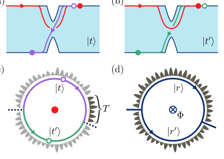
<figcaption class="paper-figure-caption"><b>Fig 1.</b> FIG. 1. (a,b) Schematic illustration of the two interfering tunneling events at the QPC, |t⟩and |t′⟩, respectively. The tunneling event creates a quasiparticle (filled circle) and a quasihole (open circle), occurring (a) after and (b) before the arrival of the injected nonequilibrium anyon (red filled circle). (c) Schematic illustration of time-domain interference in the presence of environmental noise. The two paths correspond to the tunneling events in (a) and (b). The light-gray regions denote the common noise history shared by the two paths, while the dark-gray region of duration T = t −t′ denotes the remaining non-overlapping noise history that contributes to dephasing. (d) Schematic...</figcaption>
</figure>
<figure class="paper-figure-card">
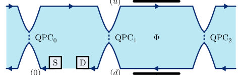
<figcaption class="paper-figure-caption"><b>Fig 2.</b> FIG. 2. FP interferometer formed by fractional quantum Hall edge states. Anyons emitted from source S propagate along edge (0) and tunnel through QPC0 to form a dilute beam. QPC1 and QPC2 couple the upper (u) and lower (d) edges, enclosing a magnetic flux Φ. The fluctuating gates V u g and V d g model environmental noise, and the output current is measured at drain D.</figcaption>
</figure>
<figure class="paper-figure-card">
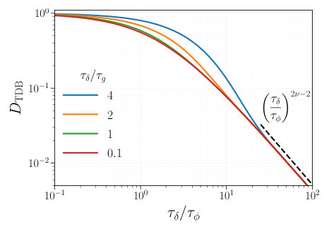
<figcaption class="paper-figure-caption"><b>Fig 3.</b> FIG. 3. Normalized TDB current DTDB as a function of τδ/τϕ for ν = 1/3 and different values of τδ/τg. The dashed line is a guide to the asymptotic power-law scaling DTDB ∝ (τδ/τϕ)2ν−2.</figcaption>
</figure>
</div>

<p><strong>Summary.</strong> This theoretical work compares the environmental robustness of Time-Domain Braiding (TDB) interference against standard spatial interference in fractional quantum Hall systems. The authors demonstrate that TDB interference is fundamentally more robust because the shared environmental noise causes noise contributions to cancel out in the relative phase. This results in a distinct, measurable power-law decay signature for TDB versus the exponential decay seen in spatial interference.</p>
<p><strong>Why it may be interesting.</strong> The finding that TDB exhibits algebraic decay rather than exponential decay provides a distinct, measurable signature for anyonic physics in realistic, noisy mesoscopic devices, which is highly relevant for quantum sensing and computation.</p>
<details>
<summary>Detailed structure</summary>
<p><strong>Main problem.</strong> The paper investigates how Time-Domain Braiding (TDB) interference compares to conventional spatial interference when subjected to environmental dephasing noise.</p>
<p><strong>Main result.</strong> TDB interference exhibits a superior robustness, decaying only algebraically with the dephasing rate, whereas spatial interference suffers exponential suppression.</p>
<p><strong>Method.</strong> The analysis involves calculating the noise-averaged interference current using the chiral Luttinger liquid description and comparing the resulting decay factors for both interference types.</p>
<p><strong>Model / system.</strong> The system is modeled using a Fabry-Pérot fractional quantum Hall geometry featuring three edge channels. The physics is described using the chiral Luttinger liquid theory, incorporating tunneling events at Quantum Point Contacts (QPCs).</p>
<p><strong>Key observables.</strong> The primary observables are the noise-averaged interference currents, $I_{TDB}$ and $I_{FP}$, and their respective decay factors ($D_{TDB}$ and $D_{FP}$).</p>
<p><strong>Important parameters / regimes.</strong> Key parameters include the dephasing rate ($    au_\phi$), the non-overlapping temporal window ($|T|$), and the characteristic length/time scales ($    au_g,   au_\delta$).</p>
<p><strong>Assumptions / limitations.</strong> The analysis assumes Gaussian phase fluctuations with short-range correlations and utilizes the chiral Luttinger liquid description for edge states.</p>
<p><strong>Figures summary.</strong> Figure 1 illustrates the conceptual difference in noise coupling between TDB and spatial interference. Figure 2 shows the proposed FQH interferometer setup where both interference types coexist.</p>
<p><strong>Paper structure.</strong> The paper first establishes the theoretical framework by modeling both spatial and TDB interference in the FQH setup. It then derives the noise-averaged current expectation values, contrasting the exponential decay of spatial interference with the algebraic decay of TDB. Finally, it proposes the FP setup for direct experimental comparison.</p>
</details>
<details>
<summary>Abstract</summary>
<p>Recent anyon-collider experiments have identified time-domain braiding (TDB) as a new route to probing anyonic statistics. However, how such time-domain interference responds to environmental noise remains an open question. Here we show that TDB interference is intrinsically more robust than its spatial counterpart. In conventional spatial interference, environmental noise induces phase fluctuations that accumulate throughout all paths, leading to exponential suppression of the interference as the dephasing rate increases. In TDB, by contrast, the interfering temporal paths experience largely overlapping environmental fluctuations, whose contributions cancel out in the relative phase, so that only a small nonoverlapping temporal window contributes to dephasing. As a result, TDB interference decays only algebraically with the dephasing rate, providing a new experimental hallmark for its identification. We propose a Fabry-Perot fractional quantum Hall setup in which both types of interference coexist and experience the same environmental noise, enabling a direct comparison of their dephasing behaviors. Our results establish robustness against dephasing as a fundamental advantage of TDB and suggest new opportunities for exploiting anyonic interference in noisy mesoscopic systems.</p>
</details>
<p><sub><a href="#top">↑ back to top</a></sub></p>

<p><a id="paper-2610.36333"></a></p>
<h3 id="activity-based-temporal-hypergraphs-from-individual-activity-to-collective-social-dynamics"><a href="http://arxiv.org/abs/2610.36333v1">Activity-based temporal hypergraphs: from individual activity to collective social dynamics</a></h3>
<p><strong>Authors:</strong> Marco Mancastroppa, Giulia Cencetti, Iacopo Iacopini, Giovanni Petri, Alain Barrat<br>
<strong>Type:</strong> theory · <strong>Category:</strong> statistical mechanics · <strong>PDF:</strong> <a href="https://arxiv.org/pdf/2610.36333v1">https://arxiv.org/pdf/2610.36333v1</a><br>
<strong>Analysis basis:</strong> full PDF text, analyzed in chunks
<strong>Topic relevance:</strong> <code>driven-dissipative phase transition</code> <strong>3/5</strong> · <code>non-equilibrium universality</code> <strong>3/5</strong> · <code>Keldysh / 2PI / non-Gaussian methods</code> <strong>2/5</strong> · <code>analog quantum simulation</code> <strong>2/5</strong> · <code>methods for driven-dissipative</code> <strong>2/5</strong> · <code>correlated / nonlocal dissipation</code> <strong>1/5</strong> · <code>quantum measurements</code> <strong>1/5</strong> · <code>scars &amp; prethermalization</code> <strong>1/5</strong></p>
<div class="figure-strip-hint">↔ Scroll figures horizontally</div>
<div class="paper-figures-scroll">
<figure class="paper-figure-card">
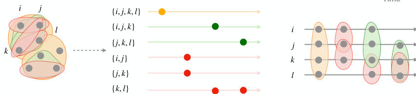
<figcaption class="paper-figure-caption"><b>Fig 1.</b> FIG. 1. Schematic representation of temporal hypergraphs. We show some snapshots of a temporal hypergraph, its aggregated hypergraph and the corresponding hyperedge-centered and node-centered representations, limited to nodes i, j, k, l. Note that the hyperedge-representation would require to consider all the triplets and pairs within the set {i, j, k, l}, however for simplicity we show only the hyperedges active at least once.</figcaption>
</figure>
<figure class="paper-figure-card">
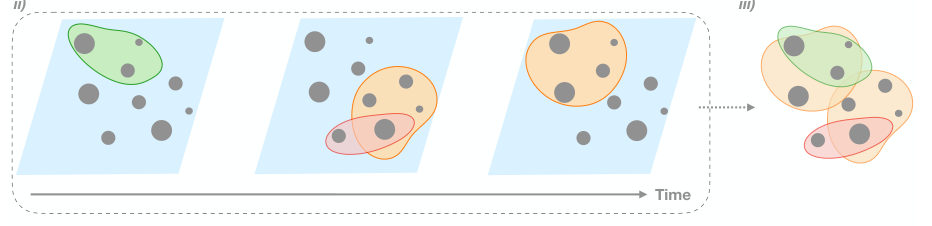
<figcaption class="paper-figure-caption"><b>Fig 2.</b> FIG. 2. Schematic representation of the HAD model. We schematically show the mechanisms underlying the HAD model. We consider a population of nodes of different activity, (ai - indicated with their size). (i) Over time the nodes are activated with rates equal to their activity. When active (red), they create a hyperedge whose size m is extracted from the distribution Ψ(m), and select the nodes with which to interact uniformly at random; (ii) these mechanisms generate a temporal hypergraph HAD, which can also be aggregated to obtain a static hypergraph (iii).</figcaption>
</figure>
<figure class="paper-figure-card">
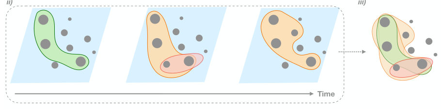
<figcaption class="paper-figure-caption"><b>Fig 3.</b> FIG. 3. Schematic representation of the HADA model. We schematically show the mechanisms underlying the HADA model. We consider a population of nodes of different activity and attractiveness (ai and bi = ai - indicated with their size). (i) Over time, the nodes are activated with rates equal to their activity. When active (red), they create a hyperedge whose size m is extracted from the distribution Ψ(m), and select the nodes with which to interact with probability proportional to their attractiveness b; (ii) these mechanisms generate a temporal hypergraph HADA, which can be aggregated to obtain a static hypergraph (iii).</figcaption>
</figure>
<figure class="paper-figure-card">
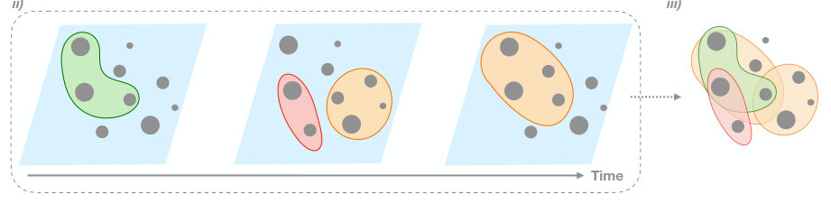
<figcaption class="paper-figure-caption"><b>Fig 4.</b> FIG. 4. Schematic representation of the HADAM model. We schematically show the mechanisms underlying the HADAM model. We consider a population of nodes of different activity and attractiveness (ai and bi = ai - indicated with their size) and with an already initialized memory matrix wi,j(t) schematically represented trough a pairwise weighted network. (i) Over time, the nodes are activated with rates equal to their activity. When active (red), they create a hyperedge whose size m is extracted from the distribution Ψ(m), and select the nodes with which to interact with both attractiveness (b) and memory (w(t)) mechanisms; (ii) these mechanisms generate a temporal hypergraph HADAM, which can...</figcaption>
</figure>
<figure class="paper-figure-card">
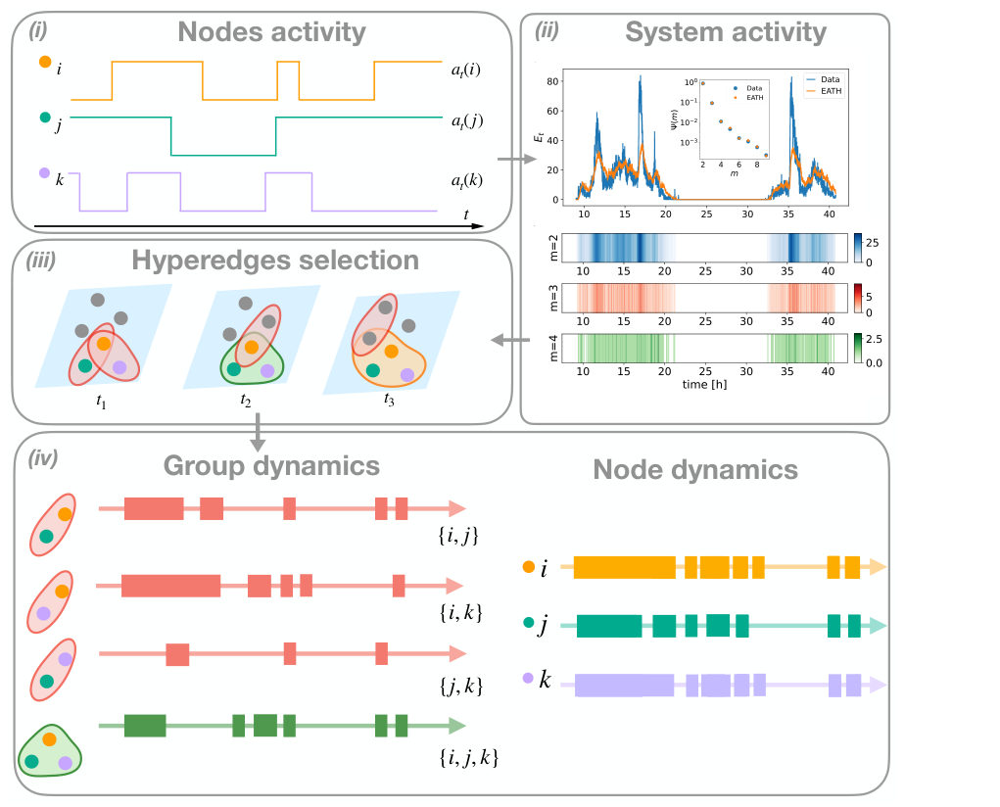
<figcaption class="paper-figure-caption"><b>Fig 5.</b> FIG. 5. Schematic representation of the EATH model. We schematically show the generation phases of the EATH model. (i) Generation of the nodes activity dynamics, which transition between low- and high-activity states. (ii) The overall activity of the system emerges from the activity dynamics of individual nodes and from the size distribution Ψ(m). (iii) The members of active interactions are selected with memory and activity mechanisms. The selection phase (iii) generates the actual groups dynamics and node dynamics (iv). The panel System activity shows the evolution of the number of active hyperedges Et (also for specific hyperedge sizes), and the hyperedge size distribution Ψ(m) (inset)...</figcaption>
</figure>
</div>

<p><strong>Summary.</strong> This paper introduces activity-based temporal hypergraphs as a powerful mathematical framework for modeling complex social dynamics. By focusing on node 'activity' rather than just network topology, the model can generate realistic synthetic data for processes like social contagion. It offers a flexible tool to study emergent collective behavior in systems with both time and group structure.</p>
<p><strong>Why it may be interesting.</strong> While focused on social physics, the mathematical machinery developed—modeling non-equilibrium dynamics, emergent collective behavior, and complex temporal correlations—shares conceptual overlap with modeling non-equilibrium quantum many-body systems or open quantum systems driven by external, fluctuating fields.</p>
<details>
<summary>Detailed structure</summary>
<p><strong>Main problem.</strong> The paper addresses the challenge of modeling complex social systems that exhibit both temporal evolution and group interactions simultaneously.</p>
<p><strong>Main result.</strong> The proposed activity-based temporal hypergraph framework (EATH) provides a highly flexible method to generate realistic surrogates of empirical social systems, applicable to processes like contagion and opinion dynamics.</p>
<p><strong>Method.</strong> The authors develop and compare several activity-driven models, progressing from simple activity-driven networks to higher-order activity-driven hypergraphs (HADx) and the advanced EATH model.</p>
<p><strong>Model / system.</strong> The core model is the activity-based temporal hypergraph, which represents social interactions as hyperedges evolving over time. It moves beyond simple topology-driven models by focusing on the 'activity' of individual nodes or groups.</p>
<p><strong>Key observables.</strong> Higher-order dynamics, average involvement of nodes, and the ability to generate synthetic datasets mimicking empirical social structures.</p>
<p><strong>Important parameters / regimes.</strong> Activity rates ($a_i$), attractiveness parameters ($b_i$), and the size distribution ($\Psi(m)$) governing hyperedge formation.</p>
<p><strong>Assumptions / limitations.</strong> The primary limitation discussed is the shift from topology-driven to node-driven dynamics, and the use of discrete-time approximations may lose fine-scale temporal information.</p>
<p><strong>Figures summary.</strong> Figure 1 schematically illustrates temporal hypergraphs using node-centered and hyperedge-centered views. Figure 2 details the mechanics of the HAD model, showing node activation leading to hyperedge generation.</p>
<p><strong>Paper structure.</strong> The paper progresses by first defining the need for temporal hypergraphs, then introducing and detailing the general activity-driven models (AD $
ightarrow$ HADx $
ightarrow$ EATH), and finally discussing the broad applicability of this framework to various complex dynamical processes.</p>
</details>
<details>
<summary>Abstract</summary>
<p>Temporal hypergraphs provide an interesting representation for many social systems, as they integrate both the temporal and group nature of social interactions. Designing models of time-varying hyper-networks yields thus a convenient way to generate surrogates of empirical social systems, to understand the mechanisms underlying their emergent properties, and to investigate the evolution of dynamical processes taking place on such structures. Here, we focus on a specific and powerful class of these models, the activity-based temporal hypergraphs. We show how activity mechanisms provide control over the time scale of the dynamics, allow high modelling flexibility, and capture heterogeneity in agents' behavior. We also highlight how the activity can straightforwardly be extracted from empirical data to create surrogate datasets. We present paradigmatic examples of such models: the higher-order activity-driven models (HADx), which show that different underlying rules for the selection of active interactions produce different higher-order dynamics; the Emerging Activity Temporal Hypergraph model (EATH), able to generate surrogates of empirical systems by using higher-order mechanisms driven by both activity and group memory. We conclude discussing future perspectives for activity-based temporal hypergraphs, highlighting the potential of this framework to bridge realistic modelling of social dynamics with the study of the complex dynamical process they can support, from social contagion to opinion dynamics.</p>
</details>
<p><sub><a href="#top">↑ back to top</a></sub></p>

<p><a id="paper-2610.36663"></a></p>
<h3 id="diagnostic-dependent-lasting-mpemba-effect-in-a-parametrically-driven-oscillator"><a href="http://arxiv.org/abs/2610.36663v1">Diagnostic-dependent lasting Mpemba effect in a parametrically driven oscillator</a></h3>
<p><strong>Authors:</strong> Shu He<br>
<strong>Type:</strong> theory · <strong>Category:</strong> other · <strong>PDF:</strong> <a href="https://arxiv.org/pdf/2610.36663v1">https://arxiv.org/pdf/2610.36663v1</a><br>
<strong>Analysis basis:</strong> full PDF text, analyzed in chunks
<strong>Topic relevance:</strong> <code>driven-dissipative phase transition</code> <strong>3/5</strong> · <code>methods for driven-dissipative</code> <strong>3/5</strong> · <code>non-equilibrium universality</code> <strong>3/5</strong> · <code>quantum measurements</code> <strong>2/5</strong> · <code>Keldysh / 2PI / non-Gaussian methods</code> <strong>1/5</strong> · <code>analog quantum simulation</code> <strong>1/5</strong> · <code>correlated / nonlocal dissipation</code> <strong>1/5</strong> · <code>scars &amp; prethermalization</code> <strong>1/5</strong></p>
<div class="figure-strip-hint">↔ Scroll figures horizontally</div>
<div class="paper-figures-scroll">
<figure class="paper-figure-card">
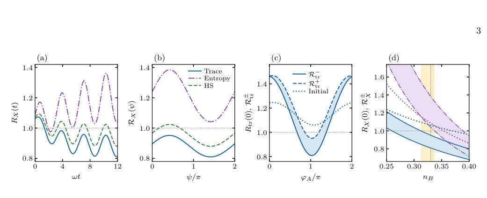
<figcaption class="paper-figure-caption"><b>Fig 1.</b> FIG. 1. Eventual orders for the main parameters, Eq. (5). (a) Finite-time ratios at nB = 0.33: trace distance (blue solid), relative entropy (purple dash-dotted), and HS distance (green dashed). After the entropy return at ωt = 2.62, trace distance and entropy keep opposite orders, while the HS ratio keeps crossing unity. (b) Corresponding leading periodic ratios versus ψ/π, where ψ = 2νt. (c) Trace-ratio extrema R− tr (solid) and R+ tr (dashed), and the initial ratio (dotted), versus the preparation phase φA at nB = 0.33. Horizontal dotted lines mark equal distances. (d) Leading intervals [R− X, R+ X] of the trace distance (blue) and relative entropy (purple) versus nB, with the...</figcaption>
</figure>
<figure class="paper-figure-card">
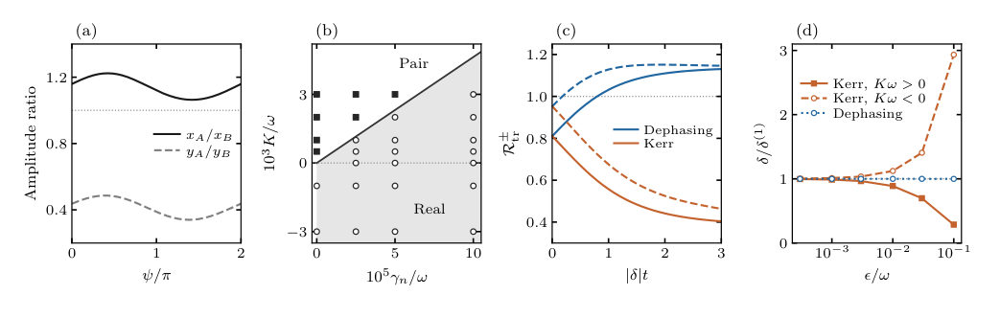
<figcaption class="paper-figure-caption"><b>Fig 2.</b> FIG. 2. Diagnostic weights and selection by weak perturbations for Eq. (5). (a) Radial-amplitude ratio xA/xB (solid) and shape-amplitude ratio yA/yB (dashed) for nB = 0.33, where xi = Tr Λi and y2 i = (Tr Λi)2 −4 det Λi. A has the larger radial deviation and the smaller shape deviation throughout the cycle. (b) Simultaneous number dephasing and Kerr interaction. The solid line is the first-order boundary K/ω = 46.4γn/ω; the shaded side favors the real branch. Full-Liouvillian calculations select the real branch (open circles) or the conjugate pair (filled squares). (c) Phase extrema R− tr (solid) and R+ tr (dashed) at fixed slow time |δ|t for nB = 0.33, with dephasing γn = 10−3ω (blue) or...</figcaption>
</figure>
<figure class="paper-figure-card">
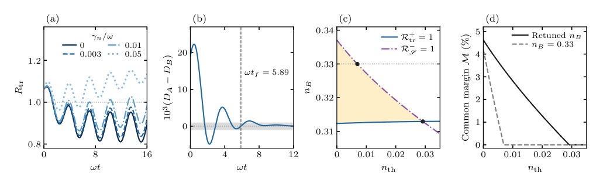
<figcaption class="paper-figure-caption"><b>Fig 3.</b> FIG. 3. Observation window for the principal pair, nB = 0.33, with the other parameters of Eq. (5). (a) Full-Liouvillian trace-distance ratios with a vacuum bath at γn/ω = 0 (solid), 0.003 (dashed), 0.01 (dash-dotted), and 0.05 (dotted). (b) Scaled distance difference 103(DA −DB) at γn = 0.05ω. The gray band denotes |DA −DB| ≤2eD for eD = 5 × 10−4 per distance. The vertical dashed line marks the last crossing, ωtf = 5.89, after which A remains farther while both distances decay. (c) Thermal bath with γn = K = γ2 = 0 and the stationary reference recomputed at each nth: boundaries R+ tr = 1 (blue) and R− S = 1 (purple). The shaded region has opposite lasting orders and both initial ratios...</figcaption>
</figure>
<figure class="paper-figure-card">
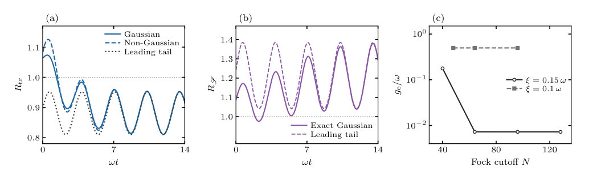
<figcaption class="paper-figure-caption"><b>Fig 4.</b> FIG. 4. Tail convergence and spectral checks. Panels (a,b) use the principal pair, nB = 0.33, and the other parameters of Eq. (5). (a) Finite-time trace ratios for Gaussian preparations (solid) and non-Gaussian preparations with matching initial covariances (dashed), together with their common leading expression (dotted). (b) Exact Gaussian relative-entropy ratio (solid) and its leading periodic tail (dashed). The curves merge for ωt ≳10; the transient entropy reversal near ωt ≃2 is absent from the tail. Horizontal dotted lines in (a,b) mark unity. (c) Leading even decay rate ge = −maxλ̸=0 Re λ versus Fock cutoff N at K = −0.03ω, for ξ = 0.15ω (circles) and 0.1ω (squares). The stronger...</figcaption>
</figure>
</div>

<p><strong>Summary.</strong> This work analyzes the Mpemba effect in a driven parametric oscillator by comparing three quantum diagnostics: trace distance, relative entropy, and HS distance. The core finding is that these metrics can disagree on the long-term relaxation order, showing that the observed dynamics are highly dependent on the measurement tool used. This highlights the subtle, diagnostic-dependent nature of non-equilibrium quantum relaxation.</p>
<p><strong>Why it may be interesting.</strong> It provides a deep, quantitative study of non-equilibrium quantum dynamics in an open system, directly addressing the ambiguity of using different quantum metrics to characterize system relaxation.</p>
<details>
<summary>Detailed structure</summary>
<p><strong>Main problem.</strong> The paper investigates the 'Mpemba effect'—the non-monotonic relaxation order of quantum states—in a parametrically driven oscillator, focusing on whether the observed late-time order depends on the specific quantum diagnostic used.</p>
<p><strong>Main result.</strong> The three primary diagnostics (trace distance, relative entropy, and Hilbert-Schmidt distance) can yield conflicting predictions for the eventual order of relaxation, demonstrating that the observed dynamics are diagnostic-dependent.</p>
<p><strong>Method.</strong> The analysis uses quantum master equations and perturbation theory to track the time evolution of quantum state differences, comparing ratios derived from different distance metrics.</p>
<p><strong>Model / system.</strong> The system is a detuned degenerate parametric amplifier operating below threshold, modeled by a quadratic generator Hamiltonian and analyzed via a Lindblad master equation in the elliptic regime.</p>
<p><strong>Key observables.</strong> Trace distance, relative entropy, Hilbert-Schmidt distance, and their ratios ($R_{tr}, R_S, R_{HS}$), used to compare the relaxation order of two Gaussian preparations.</p>
<p><strong>Important parameters / regimes.</strong> Detuning ($\omega$), parametric coupling ($\xi$), damping rate ($\kappa$), initial state parameter ($n_B$), and perturbation strengths (dephasing $\gamma_n$, Kerr $K$).</p>
<p><strong>Assumptions / limitations.</strong> The analysis often relies on leading ratio approximations or first-order perturbation theory, which are subject to limitations regarding the full time evolution.</p>
<p><strong>Figures summary.</strong> Figures illustrate the time evolution of ratios for the three diagnostics, showing different eventual orders at specific points in parameter space, and detail the dependence of these ratios on preparation phases and system parameters.</p>
<p><strong>Paper structure.</strong> The paper systematically compares the dynamics using multiple diagnostics, analyzes the structural coincidence of decay rates, and then investigates how weak perturbations (like dephasing or Kerr interaction) select or lift the observed dynamical branches.</p>
</details>
<details>
<summary>Abstract</summary>
<p>For two Gaussian preparations of a detuned degenerate parametric amplifier below threshold, the trace distance shows a lasting Mpemba reversal, whereas the relative entropy eventually restores the initial order and the Hilbert--Schmidt distance alternates indefinitely. All three diagnostics agree on the initial order, and these orders persist on open sets of preparations and quadratic generators. The disagreement is possible because a real relaxation mode and a complex-conjugate pair share the leading decay rate, a coincidence that holds for any single-mode quadratic oscillator with linear damping in the elliptic regime. Number symmetry hides their competition in the undriven trace-distance tail, and parametric driving exposes it. Near a pure stationary state, the relative entropy strongly weights changes of the symplectic eigenvalue, which approximately follow the nonoscillating energy deviation; thermal occupation weakens this preference. A first-order splitting rule shows that weak number dephasing and two-photon loss favor the real branch, whereas a Kerr interaction with the same sign as the detuning favors the pair. We quantify the thermal-occupation and dephasing tolerances and estimate the measurement precision needed to observe the disagreement. Whether a Mpemba reversal is lasting therefore depends on the diagnostic and on the observation window.</p>
</details>
<p><sub><a href="#top">↑ back to top</a></sub></p>

<p><a id="paper-2610.37092"></a></p>
<h3 id="quantum-fisher-information-deficit-as-a-geometric-signature-of-strong-to-weak-spontaneous-symmetry-breaking"><a href="http://arxiv.org/abs/2610.37092v1">Quantum Fisher Information Deficit as a Geometric Signature of Strong-to-Weak Spontaneous Symmetry Breaking</a></h3>
<p><strong>Authors:</strong> Zhang-Chi Yin, Wei Zheng<br>
<strong>Type:</strong> theory · <strong>Category:</strong> statistical mechanics · <strong>PDF:</strong> <a href="https://arxiv.org/pdf/2610.37092v1">https://arxiv.org/pdf/2610.37092v1</a><br>
<strong>Analysis basis:</strong> full PDF text, analyzed in chunks
<strong>Topic relevance:</strong> <code>correlated / nonlocal dissipation</code> <strong>3/5</strong> · <code>driven-dissipative phase transition</code> <strong>3/5</strong> · <code>Keldysh / 2PI / non-Gaussian methods</code> <strong>2/5</strong> · <code>methods for driven-dissipative</code> <strong>2/5</strong> · <code>non-equilibrium universality</code> <strong>2/5</strong> · <code>quantum measurements</code> <strong>2/5</strong> · <code>analog quantum simulation</code> <strong>1/5</strong></p>
<div class="figure-strip-hint">↔ Scroll figures horizontally</div>
<div class="paper-figures-scroll">
<figure class="paper-figure-card">
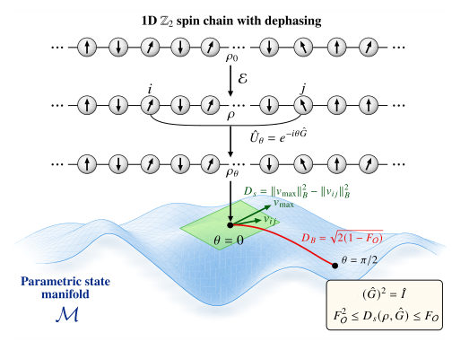
<figcaption class="paper-figure-caption"><b>Fig 1.</b> FIG. 1. Geometry of a neutral pair rotation in a dephased Z2 spin chain. The dephasing channel E maps ρ0 to ρ, and the marked sites i, j specify the generator ˆG. At θ = 0, the green arrows show the orbit tangent vij and a reference tangent vmax with maximal Bures norm. The red curve represents the Bures distance DB between ρ and ρπ/2. We establish a quantitative relation between the QFI deficit Ds and the fidelity correlator FO.</figcaption>
</figure>
<figure class="paper-figure-card">
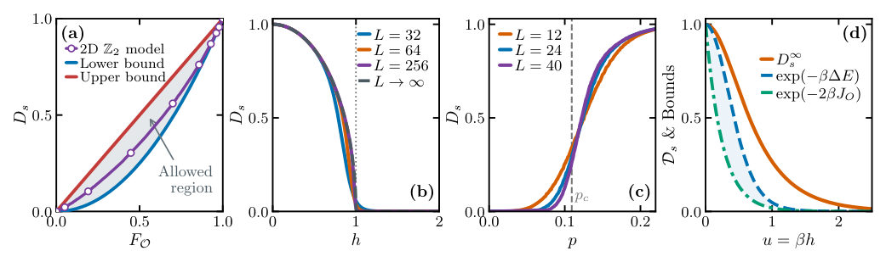
<figcaption class="paper-figure-caption"><b>Fig 2.</b> FIG. 2. Geometric bounds and model realizations. (a) Allowed physical region in the (FO, Ds) plane bounded by Ds = FO (solid red) and Ds = F 2 O (solid blue). Purple open circles trace a representative finite-size trajectory (L = 24) for the two- dimensional model. (b) ZXZ deficit versus the preparation field h after complete even-sublattice ˆ X dephasing, for L = 32, 64, 256 and r = L/2. Solid curves show finite-size free-fermion results; the gray dashed curve is the thermodynamic analytic reference, and the vertical dotted line marks h = 1. (c) Finite-size QFI deficit Ds versus edge-dephasing probability p for the two- dimensional Z2 model on open square lattices with L = 12, 24, 40 and...</figcaption>
</figure>
</div>

<p><strong>Summary.</strong> This work introduces the Quantum Fisher Information (QFI) deficit as a robust, geometric signature for detecting Strong-to-Weak Spontaneous Symmetry Breaking in open quantum systems. By establishing an inequality hierarchy, the authors show this deficit is equivalent to the long-range order of other correlators. Crucially, they derive a thermal lower bound for this deficit, providing a quantitative measure of symmetry breaking even when conventional order parameters vanish.</p>
<p><strong>Why it may be interesting.</strong> It provides a powerful, information-theoretic tool (QFI geometry) to detect subtle phases of matter (SW-SSB) in open systems where traditional order parameters break down, connecting quantum information measures to fundamental statistical physics concepts.</p>
<details>
<summary>Detailed structure</summary>
<p><strong>Main problem.</strong> The paper addresses the challenge of characterizing Strong-to-Weak Spontaneous Symmetry Breaking (SW-SSB) in open quantum systems, where conventional two-point correlators fail.</p>
<p><strong>Main result.</strong> It establishes that the QFI deficit provides a model-independent, quantitative information-geometric characterization of thermal SW-SSB, linking it to the long-range order of fidelity and Rényi-1 correlators.</p>
<p><strong>Method.</strong> The analysis employs the Quantum Fisher Information (QFI) deficit, $D_s$, and derives an inequality hierarchy relating it to fidelity and Rényi-1 correlators, especially for symmetry-projected Gibbs states.</p>
<p><strong>Model / system.</strong> The study focuses on strongly $\mathbb{Z}_2$-symmetric states with local charged involutions in open quantum systems, analyzing the system using pair-generated unitary orbits.</p>
<p><strong>Key observables.</strong> Quantum Fisher Information (QFI) deficit ($D_s$), root-fidelity correlator ($F_O$), and Rényi-1 correlator ($R_1$).</p>
<p><strong>Important parameters / regimes.</strong> Temperature ($\beta$), system size, and the parameters governing the pair-generated unitary evolution.</p>
<p><strong>Assumptions / limitations.</strong> The results are derived for strongly $\mathbb{Z}_2$-symmetric states with local charged involutions, and the thermal bound relies on specific inequalities.</p>
<p><strong>Figures summary.</strong> Figures illustrate the geometry of neutral pair rotations and show the relationship between the QFI deficit and various correlators in different lattice geometries (e.g., ZXZ chain, 2D edge-dephasing).</p>
<p><strong>Paper structure.</strong> The paper first introduces the QFI deficit as the diagnostic tool, establishes the inequality hierarchy relating $D_s$ to $F_O$ and $R_1$, then derives a lower bound for the deficit in thermal Gibbs states using injected energy, and finally applies this framework to specific lattice models.</p>
</details>
<details>
<summary>Abstract</summary>
<p>Recently, strong-to-weak spontaneous symmetry breaking (SW-SSB) has been established as a framework for describing quantum phases in open systems. However SW-SSB cannot be characterized by conventional charged two-point correlators. In this work, we show that, for strongly $\mathbb{Z}_2$-symmetric states with local charged involutions, SW-SSB manifests as a persistent deficit from the maximal quantum Fisher information (QFI) under symmetry-neutral pair rotations. A model-independent inequality hierarchy establishes the equivalence of this deficit with fidelity and Rényi-1 correlators as asymptotic long-range-order diagnostics. It thereby connects finite-angle state overlaps to a constraint on the infinitesimal Bures geometry along the same pair-generated orbit. For symmetry-projected Gibbs states, we further derive a lower bound on the deficit governed by the mean energy injected by the pair operation. Crucially, locality keeps this energy cost uniformly bounded in system size and endpoint separation, maintaining a finite gap below the maximal QFI at any fixed finite temperature. When ordinary charged long range order is absent, this persistent geometric constraint provides a quantitative information-geometric characterization of thermal SW-SSB.</p>
</details>
<p><sub><a href="#top">↑ back to top</a></sub></p>

<p><a id="paper-2610.36275"></a></p>
<h3 id="quantum-hydrodynamics-from-nambus-unpublished-fluid-notes"><a href="http://arxiv.org/abs/2610.36275v1">Quantum hydrodynamics from Nambu's unpublished fluid notes</a></h3>
<p><strong>Authors:</strong> Kazuki Ikeda<br>
<strong>Type:</strong> theory · <strong>Category:</strong> other · <strong>PDF:</strong> <a href="https://arxiv.org/pdf/2610.36275v1">https://arxiv.org/pdf/2610.36275v1</a><br>
<strong>Analysis basis:</strong> full PDF text, analyzed in chunks
<strong>Topic relevance:</strong> <code>Keldysh / 2PI / non-Gaussian methods</code> <strong>3/5</strong> · <code>correlated / nonlocal dissipation</code> <strong>3/5</strong> · <code>driven-dissipative phase transition</code> <strong>2/5</strong> · <code>methods for driven-dissipative</code> <strong>2/5</strong> · <code>quantum measurements</code> <strong>2/5</strong> · <code>analog quantum simulation</code> <strong>1/5</strong> · <code>non-equilibrium universality</code> <strong>1/5</strong></p>
<div class="figure-strip-hint">↔ Scroll figures horizontally</div>
<div class="paper-figures-scroll">
<figure class="paper-figure-card">
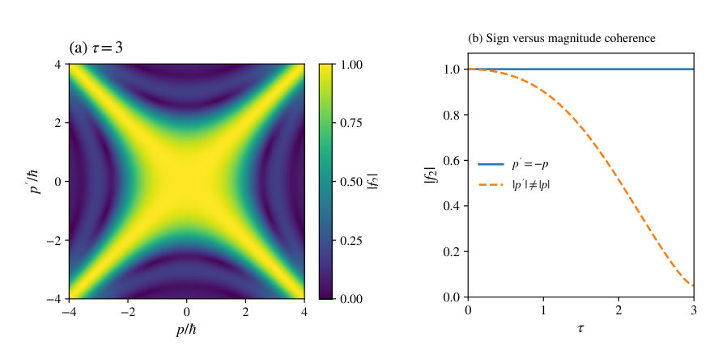
<figcaption class="paper-figure-caption"><b>Fig 1.</b> Figure 1. Momentum coherence in the two-shear model. (a) |f2(p, p′; τ)| at τ = 3. The diagonal preserves populations and the anti-diagonal preserves coherence between opposite momenta. (b) Opposite-sign coherence and an unequal-magnitude pair with p = πℏ/6, p′ = 5πℏ/6. Both panels use the Gaussian preparation of Eq. (C.1).</figcaption>
</figure>
<figure class="paper-figure-card">
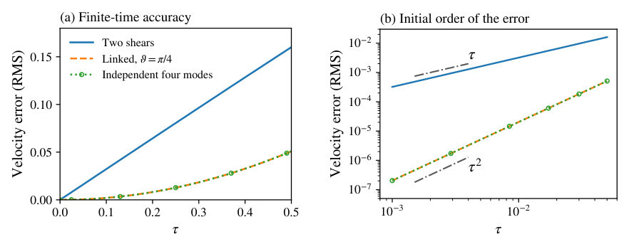
<figcaption class="paper-figure-caption"><b>Fig 2.</b> Figure 2. Classical velocity error relative to the Euler solution for identical initial data. (a) Two- shear, linked (ϑ = π/4), and independent four-mode trajectories. The two corrected trajectories nearly coincide. (b) Initial error scaling, linear for two shears and quadratic for both extensions. Reference slopes indicate these orders.</figcaption>
</figure>
<figure class="paper-figure-card">
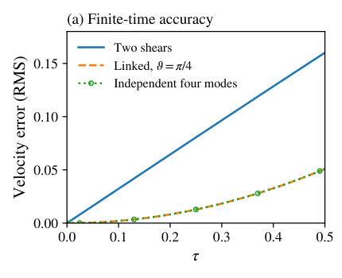
<figcaption class="paper-figure-caption"><b>Fig 3.</b> Figure 2(a) compares the two-shear trajectory with the linked model at ϑ = π/4 and the independent four-mode model. All start at the identity with ˙q = ˙r = 1 and zero added velocities. The collective trajectories follow Eq. (2.20), with an independently evolved Euler solution as reference. We measure the velocity error in the root-mean-square norm ∥f∥rms = [(2π)−3 R |f|2 d3x]1/2. Figure 2(b) shows that cancelling the initial residual changes the leading velocity error from O(τ) to O(τ 2). The linked family improves the classical trajectory over the displayed interval, with little additional change from allowing the two correcting flows to vary inde- pendently.</figcaption>
</figure>
<figure class="paper-figure-card">
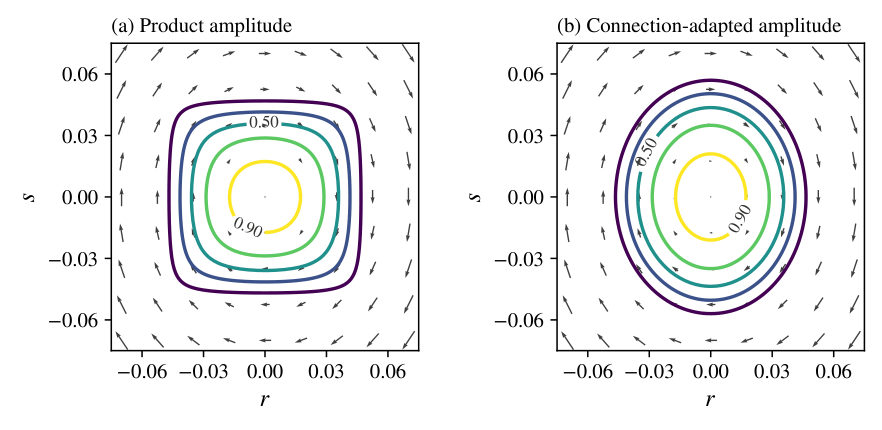
<figcaption class="paper-figure-caption"><b>Fig 4.</b> Figure 3. (a) Product and (b) connection-adapted probability densities at ϑ = π/4, E = 1000 EQ, with the same phase eir. Each density is normalized to its own maximum. Arrows follow (αϑs, −βϑr). The adapted amplitude is constant along this flow.</figcaption>
</figure>
<figure class="paper-figure-card">
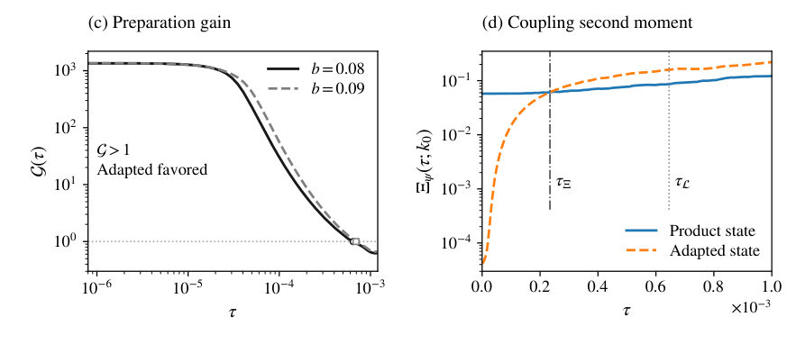
<figcaption class="paper-figure-caption"><b>Fig 5.</b> Figure 4. Evolution of the preparations in Figure 3. Blue solid and orange dashed curves denote product and adapted states. (a,b) Initial and later loss on Ω= (−b, b)2 with b = 0.08. (c) Preparation gain for b = 0.08 and 0.09, with the initial states held fixed. (d) Coupling second moments under Hc(k0) in the baseline domain. The vertical lines mark their first crossing time (τΞ) and the first coherence-loss crossing (τL). The diagnostic uses k = k0.</figcaption>
</figure>
</div>

<p><strong>Summary.</strong> This paper constructs a quantum hydrodynamic theory based on Nambu's work to analyze how quantum coherence evolves in fluid flow. It shows that while initial state preparation can minimize decoherence, the underlying geometric structure (connection curvature) dictates a fundamental, non-removable coupling between opposite momenta. The work is significant for bridging geometric mechanics, quantum information theory, and fluid dynamics.</p>
<p><strong>Why it may be interesting.</strong> It provides a rigorous quantum mechanical framework for fluid dynamics, connecting geometric structures (metrics, connections) to quantum information concepts like coherence decay and noise suppression, which is highly relevant to open quantum systems.</p>
<details>
<summary>Detailed structure</summary>
<p><strong>Main problem.</strong> The paper develops a quantum hydrodynamic theory to study the coherence preservation in incompressible fluid dynamics, building upon Nambu's unpublished notes.</p>
<p><strong>Main result.</strong> The analysis establishes that while state preparation can substantially reduce initial decoherence, the system's evolution is governed by a connection curvature that prevents the complete removal of momentum-sign coupling.</p>
<p><strong>Method.</strong> The theory uses mode separation into observed and environment subsystems, deriving reduced dynamics via a quantum channel formalism involving a mechanical connection and kinetic metric.</p>
<p><strong>Model / system.</strong> The model is a quantum description of three-dimensional incompressible fluid flow, parameterized by collective coordinates, utilizing a kinetic action leading to a metric and connection structure.</p>
<p><strong>Key observables.</strong> Quantum coherence, connection curvature, decoherence rate (quadratic decay), and the overlap function quantifying momentum-sign coherence.</p>
<p><strong>Important parameters / regimes.</strong> The initial quantum state preparation, the finite readout interval, and the coupling strength determined by the kinetic integrals.</p>
<p><strong>Assumptions / limitations.</strong> The analysis relies on separating modes into observed and environment subsystems and involves convergence proofs based on metric approximations in Sobolev spaces.</p>
<p><strong>Figures summary.</strong> Not specified, but the notes reference equations detailing the Hamiltonian, connection, and coherence overlap functions.</p>
<p><strong>Paper structure.</strong> The paper progresses by establishing the quantum hydrodynamic framework using the kinetic action, analyzing coherence protection via the mechanical connection and curvature, demonstrating the role of state preparation in mitigating decoherence, and finally proving convergence results for the decoded channel.</p>
</details>
<details>
<summary>Abstract</summary>
<p>We develop a quantum hydrodynamic theory based on Nambu's unpublished note \emph{A New Look at Fluid Dynamics}. The kinetic action defines a metric on configuration space and a mechanical connection coupling an observable cyclic deformation to unobserved fluid modes. Tracing out these modes yields a quantum channel for the observed deformation. We establish a criterion for the exact preservation of coherence between opposite momenta and show how nonzero connection curvature prevents this coupling from being removed. The leading quadratic decay of quantum coherence is determined by the prepared quantum state. For two shear flows, we identify an exact noiseless sign subsystem. Introducing additional generating flows cancels the initial residual of the Euler equations while producing nonzero connection curvature, governed by the same kinetic integrals that determine the classical correction. At fixed mean energy, choosing amplitudes adapted to the dominant coupling flow substantially reduces the initial decoherence, even along the direction that cancels the Euler residual. This advantage gradually diminishes under conditional evolution, eventually leading to a crossing of the decoherence curves. Our example shows that a preparation with a smaller initial coherence-decay coefficient can have a larger maximum sampled loss over a finite readout interval.</p>
</details>
<p><sub><a href="#top">↑ back to top</a></sub></p>

<p><a id="paper-2610.36936"></a></p>
<h3 id="qubit-environment-entanglement-in-pure-dephasing-dynamics-for-mixed-initial-states"><a href="http://arxiv.org/abs/2610.36936v1">Qubit-environment entanglement in pure dephasing dynamics for mixed initial states</a></h3>
<p><strong>Authors:</strong> Małgorzata Strzałka, Nico Peters, Laura Ares, Jan Sperling, Katarzyna Roszak<br>
<strong>Type:</strong> theory · <strong>Category:</strong> quantum information and computing · <strong>PDF:</strong> <a href="https://arxiv.org/pdf/2610.36936v1">https://arxiv.org/pdf/2610.36936v1</a><br>
<strong>Analysis basis:</strong> full PDF text, analyzed in chunks
<strong>Topic relevance:</strong> <code>methods for driven-dissipative</code> <strong>3/5</strong> · <code>QC/QI experiment</code> <strong>2/5</strong> · <code>correlated / nonlocal dissipation</code> <strong>2/5</strong> · <code>driven-dissipative phase transition</code> <strong>2/5</strong> · <code>Keldysh / 2PI / non-Gaussian methods</code> <strong>1/5</strong> · <code>analog quantum simulation</code> <strong>1/5</strong> · <code>non-equilibrium universality</code> <strong>1/5</strong> · <code>quantum measurements</code> <strong>1/5</strong></p>
<div class="figure-strip-hint">↔ Scroll figures horizontally</div>
<div class="paper-figures-scroll">
<figure class="paper-figure-card">
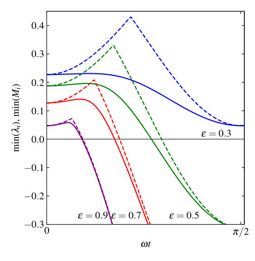
<figcaption class="paper-figure-caption"><b>Fig 1.</b> FIG. 1. Evolution of normalized entanglement witnesses for a proof-of-concept single-qubit environment for different initial coherence parameters, ε ∈{0.3, 0.5, 0.7, 0.9}. Solid lines show mini λi = λ−, and dashed lines depict mini Mi. Entanglement is present whenever the solid lines are below zero.</figcaption>
</figure>
<figure class="paper-figure-card">
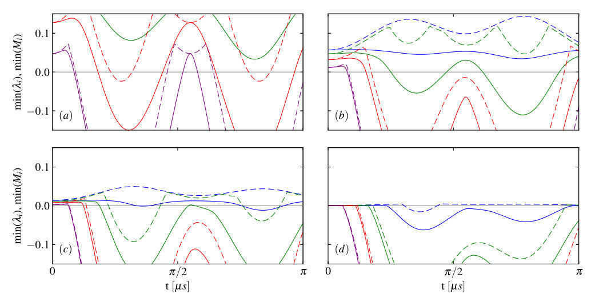
<figcaption class="paper-figure-caption"><b>Fig 2.</b> FIG. 2. Evolution of normalized entanglement witnesses for an NV center spin qubit interacting with (a) one, (b) two, (c) three, and (d) five environmental spins for different initial qubit coherence, ε ∈{0.3, 0.5, 0.7, 0.9}. Solid lines depict mini λi, and dashed lines show mini Mi. The initial polarization of each environmental spin is p = 0.5, and the applied magnetic field is Bz = 0.1 T. Colors correspond to those in Fig. 1.</figcaption>
</figure>
</div>

<p><strong>Summary.</strong> This paper provides a comprehensive theoretical study of qubit-environment entanglement during pure dephasing, crucially extending the analysis to mixed initial qubit states. It demonstrates that for mixed states, entanglement diagnostics rely on entanglement witnesses, revealing complex dynamics like the sudden appearance of entanglement. The findings highlight the limitations of simple separability criteria and emphasize the utility of advanced diagnostic tools like minimal eigenvalues.</p>
<p><strong>Why it may be interesting.</strong> This work is highly relevant to AMO physics and open quantum systems as it provides advanced diagnostic tools (beyond simple criteria) to quantify entanglement in realistic, decohering solid-state qubits (like NV centers) whose initial states are often mixed.</p>
<details>
<summary>Detailed structure</summary>
<p><strong>Main problem.</strong> The study investigates qubit-environment entanglement (QEE) dynamics under pure dephasing, specifically extending the analysis to cases where the initial qubit state is mixed, overcoming previous theoretical restrictions.</p>
<p><strong>Main result.</strong> For mixed initial states, the criteria for separability reduce to an entanglement witness, and the entanglement dynamics can exhibit features like the sudden birth of entanglement, which are forbidden for pure initial states.</p>
<p><strong>Method.</strong> The authors use entanglement witnesses, including minors and minimal eigenvalues derived from the partially transposed density matrix, to diagnose separability and entanglement in the joint qubit-environment state.</p>
<p><strong>Model / system.</strong> The model involves a single qubit interacting with an environment (bath) via an interaction causing pure dephasing. The system is analyzed using the joint density matrix evolving under the influence of the environment.</p>
<p><strong>Key observables.</strong> Qubit-environment entanglement (QEE), separability criteria, entanglement witnesses (minors and minimal eigenvalues), and the evolution of these quantities over time.</p>
<p><strong>Important parameters / regimes.</strong> The initial coherence of the qubit ($\epsilon \in [0, 1]$) is a critical parameter distinguishing pure ($\epsilon=1$) from mixed ($\epsilon<1$) initial states.</p>
<p><strong>Assumptions / limitations.</strong> The analysis assumes an initially uncorrelated state ($\hat{\sigma}(0) = \hat{
ho}(0) \otimes \hat{R}(0)$) and focuses on pure dephasing interactions.</p>
<p><strong>Figures summary.</strong> Figure 2 illustrates the evolution of normalized entanglement witnesses for different numbers of environmental spins, showing discrepancies between the minors and the actual entanglement behavior (birth/death) for mixed initial states.</p>
<p><strong>Paper structure.</strong> The paper progresses by first establishing the general framework for pure dephasing (Section II), then analyzing QEE for pure initial states (Section III), and finally focusing on the extended and more complex case of QEE for mixed initial states (Section IV).</p>
</details>
<details>
<summary>Abstract</summary>
<p>Decoherence of qubits is one main limitation in quantum information processing, where the qubits themselves can be mixed because of decoherence and additional decoherence may generated through interactions with a bath. Here, we present a complete study of qubit-environment entanglement in the case of interactions that lead to pure dephasing of the qubit by allowing the initial state of the qubit to be mixed, exceeding previous restrictions. We find that the criteria for separability that hold for pure initial states of the qubit are reduced to witness status. Yet, the evolution of the witnesses reflects the array of features that entanglement can exhibit in the mixed case but are forbidden in the pure-qubit case. Most notably, this includes sudden birth of entanglement as the initial phase of the evolution is typically separable. Moreover, there is a stark numerical advantage to the study of entanglement for large environments when using the witness rather than the traditional measures available. We include the study of entanglement generated between a spin qubit and a sparse spin environment to illustrate the peculiarities of the evolution of entanglement in this case, as well as to emphasize the level of reliability of the entanglement witness.</p>
</details>
<p><sub><a href="#top">↑ back to top</a></sub></p>

<p><a id="paper-2610.37030"></a></p>
<h3 id="residual-dynamics-determine-dissipation-in-strongly-coupled-linear-langevin-systems"><a href="http://arxiv.org/abs/2610.37030v1">Residual dynamics determine dissipation in strongly coupled linear Langevin systems</a></h3>
<p><strong>Authors:</strong> Vansh Kharbanda, Anton F. Burnet, Benedikt Sabass<br>
<strong>Type:</strong> theory · <strong>Category:</strong> statistical mechanics · <strong>PDF:</strong> <a href="https://arxiv.org/pdf/2610.37030v1">https://arxiv.org/pdf/2610.37030v1</a><br>
<strong>Analysis basis:</strong> full PDF text, analyzed in chunks
<strong>Topic relevance:</strong> <code>correlated / nonlocal dissipation</code> <strong>3/5</strong> · <code>non-equilibrium universality</code> <strong>3/5</strong> · <code>Keldysh / 2PI / non-Gaussian methods</code> <strong>2/5</strong> · <code>driven-dissipative phase transition</code> <strong>2/5</strong> · <code>methods for driven-dissipative</code> <strong>2/5</strong> · <code>Frenkel-Kontorova</code> <strong>1/5</strong></p>
<div class="figure-strip-hint">↔ Scroll figures horizontally</div>
<div class="paper-figures-scroll">
<figure class="paper-figure-card">
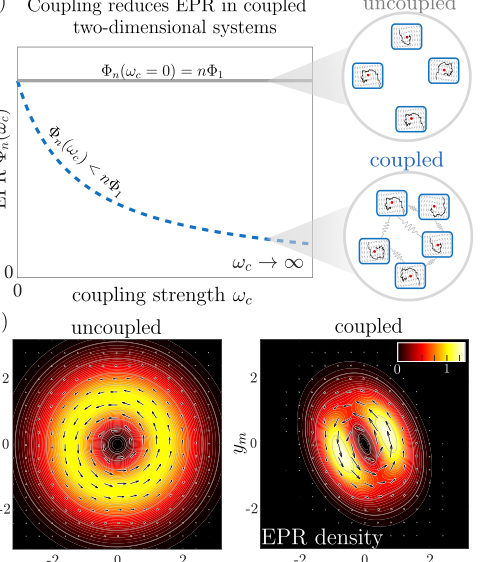
<figcaption class="paper-figure-caption"><b>Fig 1.</b> FIG. 1. Coupling reduces EPR in two-dimensional systems. (a) Coupling suppresses irreversible circulation in nonzero coupling modes, reducing the total EPR from its uncoupled value Φn(0) = nΦ1 towards its strong-coupling limit. (b) Sta- tionary probability current (arrows) overlaid on the local EPR density, ϕm = j⊤ mD−1 0 jm/p(xm), for a representative nonzero mode at ωc = 0 and ωc = 3, respectively. Increasing coupling suppresses irreversible circulation and confines the probability current to a narrower region of phase space, thereby reducing the associated dissipation. Parameters: a = 1, b = 3, c = 3, d = 1, and Dx = Dy = 1.</figcaption>
</figure>
<figure class="paper-figure-card">

<figcaption class="paper-figure-caption"><b>Fig 2.</b> FIG. 2. Coupling reduces EPR in a model of bullfrog hair-cell bundles. (a) Schematic of an array of hair-cell (hc) bundles mechanically coupled through an overlying elastic membrane. The membrane couples the bundle-position coordinates. (b) Normalized steady-state EPR as a function of the membrane coupling strength ωc in the quiescent fixed-point regime at Fmax = 31 pN and Fmax = 100 pN. All remaining single- bundle parameters are those of the bullfrog hair-bundle model in Ref. [56]. The EPR decreases monotonically with increas- ing coupling and approaches a strong-coupling value close to 1/n, consistent with the prediction of the linear theory in Eq. (13).</figcaption>
</figure>
<figure class="paper-figure-card">

<figcaption class="paper-figure-caption"><b>Fig 3.</b> FIG. 3. Mechanism of asymptotic EPR reduction in a rep- resentative higher-dimensional mode. We consider d = 4 and k = 2, with directly coupled DoF um = (u1,m, u2,m)⊤and residual DoF vm = (v1,m, v2,m)⊤. (a) Marginalized proba- bility current in the coupled DoF, R ju dvm (arrows), shown over the projected EPR density ¯σu = R j⊤ u D−1 u ju/p dvm, at ωc = 0 and ωc = 30. Increasing coupling strongly sup- presses both the current and its EPR contribution ˜Φu. (b) Marginalized current in the residual DoF, R jv dum, shown over ¯σv = R j⊤ v D−1 v jv/p dum. A finite irreversible circula- tion remains at strong coupling and converges to the residual current. (c) Alignment between the fields jres and...</figcaption>
</figure>
<figure class="paper-figure-card">

<figcaption class="paper-figure-caption"><b>Fig 4.</b> FIG. 4. Dissipation in coupled heterogeneous chemotactic signaling units. (a) Schematic of chemotactic sensing along attractant and repellent gradients. (b) Schematic of neigh- boring chemoreceptor units. Light and dark green indicate the active (a = 1) and inactive (a = 0) receptor states, re- spectively. Here s denotes the ligand stimulus and m the methylation level. Nearby units can interact through shared methylation and demethylation enzymes, CheR and CheB, which are coarse-grained in Eq. (42) as diffusive coupling be- tween their methylation variables. (c) Normalized EPR as a function of coupling strength for three coupled nonlinear chemotactic signaling units with either identical or...</figcaption>
</figure>
<figure class="paper-figure-card">

<figcaption class="paper-figure-caption"><b>Fig 5.</b> FIG. 5. (a) Schematic of a single hair-cell bundle composed of rows of stereocilia. Tip links connect neighboring stereocilia and are pulled by molecular motors. Deflection of the bun- dle along its sensitive axis, labeled X, changes the tip-link tension and opens or closes the transduction channels. (b) Schematic of the square hair-bundle array used in the simu- lations, showing the membrane-mediated couplings between neighboring bundles.</figcaption>
</figure>
</div>

<p><strong>Summary.</strong> This paper develops a theoretical framework to analyze how coupling affects energy dissipation (Entropy Production Rate) in non-equilibrium systems modeled by Langevin equations. It shows that strong coupling suppresses dissipation associated with directly coupled modes, establishing a residual dynamics limit. This limit provides a quantitative criterion to determine if coupling leads to overall reduced energy cost in complex physical or biological systems.</p>
<p><strong>Why it may be interesting.</strong> The rigorous mathematical treatment of non-equilibrium steady states, dissipation, and the identification of a residual dynamics limit provides a general theoretical tool for analyzing energy costs in complex, coupled physical systems.</p>
<details>
<summary>Detailed structure</summary>
<p><strong>Main problem.</strong> The paper investigates how coupling between degrees of freedom affects the entropy production rate (EPR) in non-equilibrium systems, specifically determining if collective operation lowers or raises dissipation.</p>
<p><strong>Main result.</strong> Strong coupling suppresses irreversible circulation associated with directly coupled degrees of freedom, leading to a strong-coupling limit for the EPR that can be used as a criterion to compare dissipation against the uncoupled state.</p>
<p><strong>Method.</strong> The analysis uses modal decomposition and asymptotic analysis of linear Langevin systems, separating the dynamics into coupled and residual components.</p>
<p><strong>Model / system.</strong> The study models linear Langevin systems, applicable to physical and biological processes like hair-cell bundles and bacterial chemotaxis, analyzed in both 2D and higher dimensions.</p>
<p><strong>Key observables.</strong> Entropy Production Rate (EPR), Probability Current, Residual Dynamics contribution.</p>
<p><strong>Important parameters / regimes.</strong> Coupling strength ($\omega_c$), Dimensionality ($d=2$ vs $d>2$).</p>
<p><strong>Assumptions / limitations.</strong> The analysis assumes that the topology matrices commute pairwise ($[K_l, K_{l'}] = 0$).</p>
<p><strong>Figures summary.</strong> Figure 1 shows coupling suppressing irreversible circulation in 2D systems, reducing total EPR towards a strong-coupling limit. Figure 2 demonstrates the monotonic decrease of normalized steady-state EPR in bullfrog hair-cell bundles with increasing coupling.</p>
<p><strong>Paper structure.</strong> The paper establishes the theoretical framework using modal decomposition, analyzes the strong-coupling limit by separating coupled and residual dynamics, derives the EPR reduction criterion based on residual dynamics, and concludes with applications to nonlinear biological models.</p>
</details>
<details>
<summary>Abstract</summary>
<p>Interactions shape the properties of many physical and biological nonequilibrium systems, but whether collective operation raises or lowers entropy production remains difficult to predict. Here, we show that strong coupling suppresses irreversible circulation associated with the directly coupled degrees of freedom. In identical two-dimensional systems, this suppression is monotonic for nonzero coupling modes and guarantees a monotonic decrease of the entropy production rate (EPR), with the corresponding probability currents vanishing in the strong-coupling limit. In higher dimensions, suppressing the circulation associated with the coupled degrees of freedom does not generally eliminate all irreversible circulation, since the remaining degrees of freedom can still sustain nonequilibrium currents. The EPR of these residual dynamics sets the strong-coupling limit, providing a criterion for whether a given choice of coupled variables leads to lower dissipation than the uncoupled system. The approach to this limit depends on how the finite-coupling current correction aligns with the residual current. Further, we show that convergence to residual dynamics in the strong-coupling limit also applies to coupled non-identical systems. Finally, we demonstrate the predicted EPR reduction in nonlinear models of vertebrate hair-cell bundles and bacterial chemotaxis.</p>
</details>
<p><sub><a href="#top">↑ back to top</a></sub></p>

<p><a id="paper-2610.36172"></a></p>
<h3 id="quantum-circuit-simulation-with-high-order-optical-tensor-processing"><a href="http://arxiv.org/abs/2610.36172v1">Quantum circuit simulation with high-order optical tensor processing</a></h3>
<p><strong>Authors:</strong> Yufeng Zhang, Xuhan Guo, Zixuan Ning, Zhiliang Yuan, Yikai Su, Kaizhi Wang, Sergei Turitsyn, Zhipei Sun<br>
<strong>Type:</strong> both · <strong>Category:</strong> quantum information and computing · <strong>PDF:</strong> <a href="https://arxiv.org/pdf/2610.36172v1">https://arxiv.org/pdf/2610.36172v1</a><br>
<strong>Analysis basis:</strong> full PDF text, analyzed in chunks
<strong>Topic relevance:</strong> <code>QC/QI experiment</code> <strong>3/5</strong> · <code>analog quantum simulation</code> <strong>3/5</strong> · <code>quantum optics experiment</code> <strong>3/5</strong> · <code>methods for driven-dissipative</code> <strong>2/5</strong> · <code>interference shaping light</code> <strong>1/5</strong></p>
<div class="figure-strip-hint">↔ Scroll figures horizontally</div>
<div class="paper-figures-scroll">
<figure class="paper-figure-card">

<figcaption class="paper-figure-caption"><b>Fig 1.</b> Fig. 1 Concept of quantum circuit simulation with high-order optical tensor processing. Digital quantum simulation</figcaption>
</figure>
<figure class="paper-figure-card">

<figcaption class="paper-figure-caption"><b>Fig 2.</b> Fig. 2 Demonstration and evaluation of parallel optical tensor-matrix multiplication. a Principle of parallel optical</figcaption>
</figure>
<figure class="paper-figure-card">

<figcaption class="paper-figure-caption"><b>Fig 3.</b> Fig. 3 Parallel optical batch simulation of quantum gate and algorithm. a Principle of batch gate-state simulation. In an</figcaption>
</figure>
<figure class="paper-figure-card">

<figcaption class="paper-figure-caption"><b>Fig 4.</b> Fig. 4 Parallel optical simulation of quantum tensor networks using a numerical physical-optics model. a MPS</figcaption>
</figure>
</div>

<p><strong>Summary.</strong> This paper introduces a novel classical optical architecture designed to simulate quantum circuits by treating gate operations and input states as independent tensor dimensions. By jointly encoding information across spatial and wavelength degrees of freedom, it achieves high-order tensor-matrix multiplication in a single optical pass. This framework provides a powerful, highly parallel route for simulating complex quantum tasks like batch gate operations and tensor network contractions.</p>
<p><strong>Why it may be interesting.</strong> This work directly tackles the computational bottleneck in quantum simulation by proposing a photonic hardware accelerator for tensor network contractions, a critical component in simulating many-body quantum systems.</p>
<details>
<summary>Detailed structure</summary>
<p><strong>Main problem.</strong> Classical simulation of quantum circuits is limited by the exponential growth of the Hilbert space, necessitating novel computational architectures.</p>
<p><strong>Main result.</strong> The authors experimentally and numerically demonstrate a unified optical framework capable of performing high-order tensor-matrix multiplications for batch gate-state simulation and tensor network contractions.</p>
<p><strong>Method.</strong> They propose an optical quantum simulation architecture that encodes gates and input state batches into independent tensor dimensions, performing the required contractions via single optical propagation.</p>
<p><strong>Model / system.</strong> The platform uses co-designed multidimensional encoding across spatial and wavelength degrees of freedom to realize high-order tensor processing, applicable to quantum circuit simulation tasks like the Deutsch and Grover algorithms.</p>
<p><strong>Key observables.</strong> State fidelities (for 2- to 4-qubit gates), measured optical intensity distributions corresponding to output states, and the successful reproduction of expected logical behavior for benchmark algorithms.</p>
<p><strong>Important parameters / regimes.</strong> The architecture achieves parallelism scaling potentially beyond $N^3$ (compared to GPU cores) by exploiting joint spatial and wavelength multiplexing.</p>
<p><strong>Assumptions / limitations.</strong> The system assumes the detector is insensitive to optical phase and that cross-wavelength interference terms average out, allowing the detection of the incoherent sum of contributions.</p>
<p><strong>Figures summary.</strong> Figures illustrate the concept of mapping tensor contractions onto a single optical propagation, showing experimental setups for multi-wavelength tensor-matrix multiplication, and demonstrating batch simulations for algorithms like Deutsch and Grover.</p>
<p><strong>Paper structure.</strong> The paper introduces the problem of Hilbert space scaling, presents the optical tensor processing architecture using joint spatial/wavelength encoding, validates the concept through experimental realization of tensor-matrix multiplication, and finally applies this framework to simulate quantum algorithms (Deutsch, Grover).</p>
</details>
<details>
<summary>Abstract</summary>
<p>Classical simulation is essential for developing and testing quantum circuits, but the exponential growth of Hilbert space challenges conventional digital processors. Here, we introduce a classical optical quantum simulation architecture that treats gates and batches of input states as independent tensor dimensions rather than separate simulation instances, while mapping eligible tensor network contractions onto the same processor. Using co-designed multidimensional encoding and readout across spatial and wavelength degrees of freedom, we experimentally realize high-order tensor-matrix multiplication in a single propagation and process all computational-basis inputs for each 4-qubit gate. Using a physics-based optical propagation model, we further numerically evaluate the architecture for the Deutsch algorithm and for the tensor network of all 128 target instances of a 7-qubit Grover algorithm. These results establish a unified framework for gate-state batch and tensor network simulation, providing a route to exploit optical concurrency across quantum simulation tasks.</p>
</details>
<p><sub><a href="#top">↑ back to top</a></sub></p>

<p><a id="paper-2610.36048"></a></p>
<h3 id="typicality-of-entanglement-growth-and-transport-fluctuations-in-quantum-symmetric-exclusion-processes"><a href="http://arxiv.org/abs/2610.36048v1">Typicality of entanglement growth and transport fluctuations in quantum symmetric exclusion processes</a></h3>
<p><strong>Authors:</strong> Ewan McCulloch<br>
<strong>Type:</strong> theory · <strong>Category:</strong> statistical mechanics · <strong>PDF:</strong> <a href="https://arxiv.org/pdf/2610.36048v1">https://arxiv.org/pdf/2610.36048v1</a><br>
<strong>Analysis basis:</strong> full PDF text, analyzed in chunks
<strong>Topic relevance:</strong> <code>Full counting statistics</code> <strong>3/5</strong> · <code>non-equilibrium universality</code> <strong>3/5</strong> · <code>Keldysh / 2PI / non-Gaussian methods</code> <strong>2/5</strong> · <code>methods for driven-dissipative</code> <strong>2/5</strong> · <code>analog quantum simulation</code> <strong>1/5</strong></p>
<div class="figure-strip-hint">↔ Scroll figures horizontally</div>
<div class="paper-figures-scroll">
<figure class="paper-figure-card">

<figcaption class="paper-figure-caption"><b>Fig 1.</b> FIG. 1. Schematic of the typicality derivation. The forward and inverse moments of the QSSEP charge-transfer generating function map to classical SSEP and a Brownian energy process (BEP) [65], respectively. A field transforma- tion relates their MFT saddle problems, yielding matching large-deviation functions and establishing typicality of charge- transfer statistics, and by Ref. [15], entanglement dynamics.</figcaption>
</figure>
<figure class="paper-figure-card">

<figcaption class="paper-figure-caption"><b>Fig 2.</b> FIG. 2. Exact entanglement predictions for (a) domain-wall and (b) N´eel initial states. (a)–(b) show the noise-averaged R´enyi and von Neumann entropies, rescaled by √</figcaption>
</figure>
</div>

<p><strong>Summary.</strong> This theoretical work proves that the complex quantum dynamics of the Quantum Symmetric Exclusion Process (QSSEP) are governed by the statistics of its classical counterpart, the SSEP, even during transient evolution. Using Macroscopic Fluctuation Theory, the authors establish the typicality of entanglement growth and charge-transfer fluctuations. This provides powerful, analytically derived predictions for quantum entanglement in integrable many-body systems.</p>
<p><strong>Why it may be interesting.</strong> The rigorous connection between quantum entanglement dynamics (entropy growth) and classical stochastic processes (SSEP) via typicality arguments is highly relevant for understanding non-equilibrium quantum many-body physics.</p>
<details>
<summary>Detailed structure</summary>
<p><strong>Main problem.</strong> The paper establishes the typicality of charge-transfer statistics and entanglement dynamics in the quantum symmetric exclusion process (QSSEP) in the transient regime following quenches.</p>
<p><strong>Main result.</strong> It proves that the long-time charge-transfer statistics of the QSSEP almost surely coincide with those of the classical symmetric exclusion process (SSEP), yielding asymptotically exact predictions for entanglement growth.</p>
<p><strong>Method.</strong> The analysis heavily employs Macroscopic Fluctuation Theory (MFT) and techniques involving the comparison of forward and inverse generating functions to establish convergence to classical limits.</p>
<p><strong>Model / system.</strong> The system is the Quantum Symmetric Exclusion Process (QSSEP), a model of stochastically hopping free fermions exhibiting diffusive transport and long-range quantum coherence. Its classical counterpart is the SSEP.</p>
<p><strong>Key observables.</strong> Charge-transfer full counting statistics, Rényi and von Neumann entropies, and the subsystem covariance matrix eigenvalue distribution.</p>
<p><strong>Important parameters / regimes.</strong> The analysis focuses on the transient regime, large time limits ($t 	o \infty$), and the diffusive scaling $\ell \equiv \sqrt{Dt}$.</p>
<p><strong>Assumptions / limitations.</strong> The derivation relies on comparing the noise averages of the generating function and assuming the dominant saddles in the MFT are smoothly connected to the zero-tilt solutions.</p>
<p><strong>Figures summary.</strong> Figures compare entanglement predictions and rescaled eigenvalue counts for domain-wall and Néel states, showing excellent agreement between analytical SSEP predictions and numerical simulations.</p>
<p><strong>Paper structure.</strong> The paper progresses by first establishing typicality using MFT by comparing forward and inverse generating functions, then extending this proof to the complex field domain using spectral bounds, and finally deriving the asymptotic form for the von Neumann entropy.</p>
</details>
<details>
<summary>Abstract</summary>
<p>We use macroscopic fluctuation theory (MFT) to establish the typicality of charge-transfer statistics and entanglement dynamics in the quantum symmetric exclusion process, a model of stochastically hopping free fermions with diffusive transport and long-range quantum coherence. We show that the leading long-time charge-transfer full counting statistics of individual noise realizations coincide almost surely with those of the classical symmetric exclusion process (SSEP), in equilibrium and following quenches from arbitrary occupation-diagonal product states. Our results apply to transient fluctuations in the thermodynamic limit, extending previous work that has primarily focused on stationary regimes. Our approach compares the noise averages of the charge-transfer generating function and its inverse. The former reduces to SSEP, while the latter maps to an auxiliary Brownian energy process whose MFT saddle-point problem is related to that of SSEP, yielding matching large-deviation exponents. Through free-fermion identities relating entanglement to subsystem-number fluctuations, this establishes the self-averaging of the covariance-matrix eigenvalue distribution and of Rényi and von Neumann entropies. We obtain asymptotically exact predictions for entanglement growth from domain-wall and Néel initial states, in excellent agreement with numerical simulations.</p>
</details>
<p><sub><a href="#top">↑ back to top</a></sub></p>

<p><a id="paper-2610.36167"></a></p>
<h3 id="analog-quantum-experiments-meet-automatic-differentiation-from-programs-to-atoms"><a href="http://arxiv.org/abs/2610.36167v1">Analog Quantum Experiments Meet Automatic Differentiation - from Programs to Atoms</a></h3>
<p><strong>Authors:</strong> Yue Shi, Pengyu Liu, Yuxiang Peng<br>
<strong>Type:</strong> both · <strong>Category:</strong> quantum information and computing · <strong>PDF:</strong> <a href="https://arxiv.org/pdf/2610.36167v1">https://arxiv.org/pdf/2610.36167v1</a><br>
<strong>Analysis basis:</strong> full PDF text, analyzed in chunks
<strong>Topic relevance:</strong> <code>QC/QI experiment</code> <strong>3/5</strong> · <code>analog quantum simulation</code> <strong>3/5</strong> · <code>methods for driven-dissipative</code> <strong>2/5</strong> · <code>quantum measurements</code> <strong>2/5</strong></p>
<div class="figure-strip-hint">↔ Scroll figures horizontally</div>
<div class="paper-figures-scroll">
<figure class="paper-figure-card">

<figcaption class="paper-figure-caption"><b>Fig 1.</b> Figure 1. Overview of DiffSimuQ. A source experiment is transformed compositionally into a derivative program in the same language, realized either by NSR or by PSR, and sent through the same compilation stack.</figcaption>
</figure>
<figure class="paper-figure-card">

<figcaption class="paper-figure-caption"><b>Fig 2.</b> Figure 2. The finite-difference trap on a landscape narrower than the hardware’s step resolution: the illustrated secants have the wrong sign, while the shaded band shows the noise cone near the step-resolution limit.</figcaption>
</figure>
<figure class="paper-figure-card">

<figcaption class="paper-figure-caption"><b>Fig 3.</b> Figure 6. The lowering stack, with an NSR branch along the bottom (the PSR branch in Figure 7). Programs normalize to straight-line branches; extended SimuQ realizes the source Hamiltonian as machine-native segments. DiffSimuQ reuses the source to lower derivative branches as structured edits, then schedules them to controls and logs the result in the PulseLedger.</figcaption>
</figure>
<figure class="paper-figure-card">

<figcaption class="paper-figure-caption"><b>Fig 4.</b> Figure 7. One device-ready compiled PSR branch 𝐵𝑗,𝑠(𝜏) of the running instance, 𝐴𝑗= 𝑍𝑎𝑍𝑏. Space: the pair is carried to the gate zone and back. Time: active channels per stage (axis not to scale). Ledger: the PulseLedger rows for the same branch, each group labelled with the program constructor it realizes. The inserted segment ev(0, 𝜋/4,𝑠· 𝑍𝑎𝑍𝑏) is one CZ plus virtual 𝑅𝑧rotations (Appendix E).</figcaption>
</figure>
<figure class="paper-figure-card">

<figcaption class="paper-figure-caption"><b>Fig 5.</b> Figure 8. Gradient error against execution budget. NSR and PSR converge at 𝑁−1/2. FD with 𝜖∗re-tuned per 𝑁follows 𝑁−1/3 on the noiseless landscape (left) and reaches a bias floor under the device model (right, dashed); a too-small 𝜖 amplifies shot noise and setpoint error, while a too-large 𝜖is truncation-limited. Inset: error against step size at the budget marked by the vertical line.</figcaption>
</figure>
</div>

<p><strong>Summary.</strong> This paper presents DiffSimuQ, a novel framework that enables automatic differentiation for analog quantum experiments by transforming the source program into an equivalent derivative program. It achieves this using specific rules, like the Nyquist Shift Rule, which allow the derivative to be computed entirely through measurable, executable quantum operations. This breakthrough allows for robust, gradient-based optimization of quantum hardware by integrating differentiation into the quantum compilation stack.</p>
<p><strong>Why it may be interesting.</strong> This work provides a crucial software/algorithmic tool for quantum hardware optimization, allowing researchers to treat gradient calculation as a first-class, differentiable programming construct, which is vital for variational quantum algorithms.</p>
<details>
<summary>Detailed structure</summary>
<p><strong>Main problem.</strong> The core problem is developing a method to calculate the gradient of an expectation value derived from an analog quantum experiment, where the quantum state itself is inaccessible.</p>
<p><strong>Main result.</strong> The authors introduce DiffSimuQ, a compositional framework that transforms an executable quantum program $P(	heta)$ into a derivative program $D_\ell[P(	heta)]$ whose expected outcome is the exact derivative.</p>
<p><strong>Method.</strong> The method relies on two specific rules—the Nyquist Shift Rule (NSR) for general evolution and the Parameter-Shift Rule (PSR) for involutory generators—to embed differentiation directly into the quantum circuit compilation process.</p>
<p><strong>Model / system.</strong> The system involves open-loop analog quantum experiments on $n$ qubits, governed by time-dependent Hamiltonians $H(	heta, t)$. The output is a measurement sample used to estimate an expectation value, $\langle\psi|M|\psi
angle$.</p>
<p><strong>Key observables.</strong> The objective function $C(	heta)$ estimated from measurement samples, and its derivative $rac{\partial C}{\partial   heta_\ell}$.</p>
<p><strong>Important parameters / regimes.</strong> The number of qubits ($n$), the step size ($\epsilon$) in finite differences, and the relative costs of NSR vs. PSR implementations.</p>
<p><strong>Assumptions / limitations.</strong> The framework is currently limited to open-loop experiments, excluding real-time feedback or mid-circuit measurements; hardware realization errors are treated separately from the derivative semantics.</p>
<p><strong>Figures summary.</strong> Figures illustrate the transformation from $P(	heta)$ to $D_\ell[P(	heta)]$ via a shared compiler, and compare the performance and error characteristics of NSR, PSR, and FD.</p>
<p><strong>Paper structure.</strong> The paper first establishes the difficulty of gradient estimation in quantum hardware, then introduces DiffSimuQ as a compositional AD framework, details the NSR and PSR realizations for continuous evolution, and concludes with compiler integration and performance analysis.</p>
</details>
<details>
<summary>Abstract</summary>
<p>Gradient-based optimization of analog quantum hardware poses a concrete programming problem: given an executable experiment P(θ) that returns only measurement samples, what executable experiment should the system run to obtain (d/dθ_ell)P(θ)? Conventional automatic differentiation cannot propagate through the inaccessible quantum state, while finite differences require a noise-sensitive step size and analytic gradient identities cover only parts of an experiment. We present DiffSimuQ, which shows that a broad class of open-loop analog quantum experiments is closed under automatic differentiation. A compositional transformation maps P(θ) to a derivative program D_ell[P(θ)] in the same language whose expected outcome is exactly the derivative. Only continuous evolution requires a strategy-specific rule, and we give two realizations. Our Nyquist shift rule (NSR) applies to general time-dependent evolution: we prove that the observable response to shifting the Hamiltonian along its tangent is band-limited even for non-commuting controls, enabling exact reconstruction from shifted executions. For involutory generators, a parameter-shift realization (PSR) inserts a parameter-independent operation at a sampled time. Because derivative programs remain ordinary programs, source and derivative experiments share one compiler, which reuses the source realization, lowers branches to device-ready neutral-atom controls, and selects between NSR and PSR based on estimated cost. Under device noise, the exact derivative programs differentiate the objective realized by the device, with hardware realization errors treated separately. In machine-level noisy emulation, NSR and PSR avoid the finite-difference error floor and improve closed-loop optimization; they win in complementary cost regimes, while each derivative branch at 1000 qubits add at most 0.3% to source compilation time.</p>
</details>
<p><sub><a href="#top">↑ back to top</a></sub></p>

<p><a id="paper-2610.37493"></a></p>
<h3 id="recovering-classical-gauge-geometry-from-quantum-master-constraints"><a href="http://arxiv.org/abs/2610.37493v1">Recovering classical gauge geometry from quantum master constraints</a></h3>
<p><strong>Authors:</strong> Alejandro Corichi<br>
<strong>Type:</strong> theory · <strong>Category:</strong> other · <strong>PDF:</strong> <a href="https://arxiv.org/pdf/2610.37493v1">https://arxiv.org/pdf/2610.37493v1</a><br>
<strong>Analysis basis:</strong> full PDF text, analyzed in chunks
<strong>Topic relevance:</strong> <code>Keldysh / 2PI / non-Gaussian methods</code> <strong>3/5</strong> · <code>methods for driven-dissipative</code> <strong>2/5</strong> · <code>quantum measurements</code> <strong>2/5</strong> · <code>analog quantum simulation</code> <strong>1/5</strong> · <code>correlated / nonlocal dissipation</code> <strong>1/5</strong> · <code>driven-dissipative phase transition</code> <strong>1/5</strong></p>
<div class="figure-strip-hint">↔ Scroll figures horizontally</div>
<div class="paper-figures-scroll">
<figure class="paper-figure-card">

<figcaption class="paper-figure-caption"><b>Fig 1.</b> Figure 1: Linearized master response in a single canonical plane. Left: for m = p2/2, the zero set p = 0 is coisotropic and the flow maps (δq, δp) to (δq + t δp, δp); a circular covariance contour is sheared along the gauge direction. Right: for m = (q2 + p2)/2, the zero set is a point and an anisotropic contour rotates. The ellipses display the linear maps acting on covariance contours. The distinction is L2 = 0 versus L2 = −1. Exact quantum covariances realizing the left panel are shown in Figure 2.</figcaption>
</figure>
<figure class="paper-figure-card">

<figcaption class="paper-figure-caption"><b>Fig 2.</b> Figure 2: Exact master evolution of a coherent packet centred on the constraint surface S = E/ν of two oscillators (ν = 1, E = 2). (a) Variance along the gauge direction XC, divided by ℏ, from the exact moments (5.8) and (5.11), compared with the shear prediction 1</figcaption>
</figure>
</div>

<p><strong>Summary.</strong> This paper develops a rigorous mathematical framework to recover classical gauge symmetries from quantum constraints implemented via a master operator. It shows that the structure of the gauge directions is encoded in the response of the master dynamics, providing a powerful diagnostic tool for quantum theories with constraints. This has significant implications for understanding semiclassical limits in quantum gravity and gauge theories.</p>
<p><strong>Why it may be interesting.</strong> Although focused on general constrained dynamics, the rigorous mathematical framework for relating classical symmetries (gauge invariance) to quantum evolution via master operators is crucial for understanding open quantum systems and decoherence in complex physical settings.</p>
<details>
<summary>Detailed structure</summary>
<p><strong>Main problem.</strong> The paper addresses the fundamental problem of recovering the classical gauge geometry (degenerate directions) from quantum constraints when the constraints are implemented via a single positive master operator.</p>
<p><strong>Main result.</strong> It establishes that the image of the linearized master Hamiltonian vector field is the symplectic orthogonal of the zero set, and this image is identified with the response of the master dynamics, making the gauge structure accessible to quantum states.</p>
<p><strong>Method.</strong> The analysis employs advanced mathematical techniques including the Morse–Bott hypothesis, semiclassical quantization (coherent and Weyl symbols), and analyzing the second time derivative of quantum covariance.</p>
<p><strong>Model / system.</strong> The work is highly general, applying to constrained Hamiltonian systems, with specific calculations performed for the two-oscillator system and the non-Abelian SL(2,R) model, drawing parallels to General Relativity.</p>
<p><strong>Key observables.</strong> The second time derivative of the limiting Gaussian covariance of a semiclassical packet, and the spectral bottom of the master operator.</p>
<p><strong>Important parameters / regimes.</strong> The reduced Planck constant ($\hbar$), and the structure of the master function's Hessian.</p>
<p><strong>Assumptions / limitations.</strong> The analysis relies on the Morse–Bott hypothesis for the master function, and the results are shown to be local diagnostics rather than a full continuum constraint algebra for gravity.</p>
<p><strong>Figures summary.</strong> Figures contrast the linearized master response for coisotropic (shear) versus second-class (rotation) zero sets, and show exact quantum covariances realizing the shear pattern.</p>
<p><strong>Paper structure.</strong> The paper builds from classical constraint analysis to the quantum master operator formalism, deriving a local reconstruction theorem, and then applying this framework to specific models like the oscillator and SL(2,R) to verify the recovery of gauge structure.</p>
</details>
<details>
<summary>Abstract</summary>
<p>Exact normalizable solutions of quantum constraints form a symplectic submanifold of the space of rays, whereas classical first-class constraints define a surface on which the symplectic form is degenerate. We ask how the degenerate directions can be recovered when quantum theory is regarded as fundamental and the constraints are imposed through a single positive master operator. For a nonnegative master function whose zero set is a Morse--Bott critical manifold, the image of the linearized Hamiltonian vector field is the symplectic orthogonal of the zero set, and coisotropy is equivalent to this linearization having square zero. The image is fixed by the zero set, but the theorem identifies it with the response of the master dynamics, which makes it accessible to quantum states. Three realizations follow. The exact quantum physical space is the opposite, rotational case of the same dichotomy. For quadratic masters, the bottom of the spectrum is $(\hbar/2)\Tr_+L$, so first-class zero sets carry no offset of order $\hbar$; within the harmonic approximation this explains the $\hbar$ versus $\hbar^2$ offsets observed in tests of the master-constraint programme. Finally, the second time derivative of the limiting covariance of a semiclassical packet, which can be determined by bounded probes, has the gauge distribution as its image. Two oscillators at fixed total energy give exact master evolution, an exact realization of this covariance shear, and the reduced symplectic limit. For the non-Abelian SL(2,$\R$) model we compute the coherent and Weyl master symbols, prove essential self-adjointness and a finite-time propagation estimate, and derive the spectral bottom $\hbar^2/2$.</p>
</details>
<p><sub><a href="#top">↑ back to top</a></sub></p>

<p><a id="paper-2610.36438"></a></p>
<h3 id="dynamical-behaviour-of-the-mass-tensor-in-the-lattice"><a href="http://arxiv.org/abs/2610.36438v1">Dynamical behaviour of the mass tensor in the lattice</a></h3>
<p><strong>Authors:</strong> Josué Calle, Diego Sanjinés, Evaristo Mamani<br>
<strong>Type:</strong> theory · <strong>Category:</strong> other · <strong>PDF:</strong> <a href="https://arxiv.org/pdf/2610.36438v1">https://arxiv.org/pdf/2610.36438v1</a><br>
<strong>Analysis basis:</strong> full PDF text, analyzed in chunks
<strong>Topic relevance:</strong> <code>Keldysh / 2PI / non-Gaussian methods</code> <strong>3/5</strong> · <code>analog quantum simulation</code> <strong>2/5</strong> · <code>Frenkel-Kontorova</code> <strong>1/5</strong> · <code>driven-dissipative phase transition</code> <strong>1/5</strong> · <code>methods for driven-dissipative</code> <strong>1/5</strong> · <code>non-equilibrium universality</code> <strong>1/5</strong></p>
<div class="figure-strip-hint">↔ Scroll figures horizontally</div>
<div class="paper-figures-scroll">
<figure class="paper-figure-card">

<figcaption class="paper-figure-caption"><b>Fig 1.</b> Figure 1: Values of the external field parameters α, β defined in f(ωt) = (α/a, β/b)ω cos(ωt), with a = 20b and ω high enough such that the effective Hamiltonian (9) is valid (the case of Fig. 6 below shows a numerical estimation of such a large value of ω). The black dots correspond to the parameters for which the effective masses mx, my become equal as a consequence of the condition J0(α)/J0(β) = 2.94. The trajectories in this case are ellipses.</figcaption>
</figure>
<figure class="paper-figure-card">

<figcaption class="paper-figure-caption"><b>Fig 2.</b> Figure 2: Trajectory of the particle in the continuum with field parameters α = β = 0 and initial conditions x(0)/a = 230 (a is the length of the orthorrombic cell’s largest side), y(0) = 0, kx(0) = 0 and ky(0) = 2.587 (where the latter is in units of 1/a and was determined with (19)). This result reproduces that reported by Cortés [8], wherein different masses mx, my on the X, Y axes are introduced such that ξ ≡mx/my = 2.94.</figcaption>
</figure>
<figure class="paper-figure-card">

<figcaption class="paper-figure-caption"><b>Fig 3.</b> Figure 3: Angular momentum corresponding to the trajectories with β = {0; 1.9; 2.24; 2.262; 2.363} from Fig. (4). It can be seen that the angular momentum for these trajectories is irregular, except for β = 2.262, where the trajectory is elliptical and its angular momentum is conserved</figcaption>
</figure>
<figure class="paper-figure-card">

<figcaption class="paper-figure-caption"><b>Fig 4.</b> Figure 4: Sequence of trajectories corresponding to the regions marked with circles in Fig. 5, where the chaos–order–chaos transition can be clearly seen; the “order&quot; or stationary regime includes the elliptical and quasi-elliptical trajectories (ellipse with precession), indistinguishable in region 3-4 of Fig. 5.</figcaption>
</figure>
<figure class="paper-figure-card">

<figcaption class="paper-figure-caption"><b>Fig 5.</b> Figure 5: Value of the Lyapunov exponent λ vs. β, the vertical component of the external electric field (with horizontal component α constant) for more than 1000 points. Specifically, the values of λ and β in the regions marked with the circles correspond, sequentially, to the trajectories of Fig. 4, where the transition between chaos and order can be observed. This is the phenomenon of chaos control.</figcaption>
</figure>
</div>

<p><strong>Summary.</strong> This work analyzes the dynamics of an electron in a lattice under external fields, focusing on the transition between chaotic and ordered motion. By applying a rapidly oscillating field, the authors demonstrate 'chaos control' by tuning the effective mass tensor components to force the system into stable, elliptical trajectories. This technique offers a powerful method for controlling quantum transport phenomena in engineered solid-state systems.</p>
<p><strong>Why it may be interesting.</strong> The concept of controlling classical dynamics (chaos control) in a lattice structure by engineering effective parameters is highly relevant to understanding quantum transport and engineered quantum systems.</p>
<details>
<summary>Detailed structure</summary>
<p><strong>Main problem.</strong> The study investigates the dynamics of a charged particle moving in a lattice under the influence of a Coulomb potential and a rapidly oscillating external field.</p>
<p><strong>Main result.</strong> Applying the oscillating field allows for 'interaction engineering' that modifies the effective mass tensor, enabling a transition from chaotic motion to stable, elliptical trajectories (chaos control).</p>
<p><strong>Method.</strong> The analysis employs a semiclassical model, utilizing Kapitza's time-averaging method to derive an effective Hamiltonian and calculating Lyapunov exponents to diagnose the transition between chaotic and ordered regimes.</p>
<p><strong>Model / system.</strong> The system models an electron in an orthorhombic lattice subjected to a static Coulomb field and a time-dependent, rapidly oscillating electric field. The dynamics are governed by an effective Hamiltonian derived via time-averaging.</p>
<p><strong>Key observables.</strong> Lyapunov exponents ($\lambda$), effective mass tensor components ($  ilde{m}_x/  ilde{m}_y$), and the induced magnetic field components ($\langle \mathbf{B} 
angle$).</p>
<p><strong>Important parameters / regimes.</strong> The ratio of effective masses ($    ilde{m}_x/  ilde{m}_y$) and the parameters ($\alpha, eta$) controlling the external field strength, which must satisfy specific relations involving Bessel functions for chaos control.</p>
<p><strong>Assumptions / limitations.</strong> The analysis relies on the semiclassical approximation and the continuum limit for certain derivations.</p>
<p><strong>Figures summary.</strong> Figures illustrate the transition from chaotic (random) to stationary (elliptical) trajectories by varying field parameters, and show the resulting average magnetic field components distinguishing the two regimes.</p>
<p><strong>Paper structure.</strong> The paper progresses from establishing the initial Hamiltonian and semiclassical equations, to applying Kapitza averaging to find the effective Hamiltonian, and finally demonstrating chaos control by tuning external field parameters to equalize effective masses.</p>
</details>
<details>
<summary>Abstract</summary>
<p>We study with the semiclassical model the dynamics of a particle moving in a orthorrombic lattice by the hopping mechanism in the presence of a static Coulomb field and a rapidly oscillating homogeneous field. Based on results for the anisotropic Kepler problem, where a chaotic trajectory arises due to different masses of the particle in the X and Y directions, and since this result is also obtained in the rectangular lattice at the continuum limit, the application of the oscillating field allows reparameterizing the effective masses so that they become equal in both directions. Thus, the result is an elliptic trajectory in the continuum limit of the lattice. This chaos-order transition is confirmed by the calculation of Lyapunov exponents for the different trajectories. It is also found that the application of an external magnetic field in the Z direction of the lattice yields chaos control which can be generalized beyond the simple case of the circular trajectory shown in this work. The previous scheme of chaos control was extended for trajectories in 3D in the continuum limit of the orthorrombic lattice which is also equivalent to the far region approximation where the particle moves with respect to the Coulomb field origin. In this case it found that the chaos control technique permits to observe two different dynamical regimes which, although consistent with Bohr-van Leeuwen theorem, suggests that an observable way to distinguish one from the other is to be sought.</p>
</details>
<p><sub><a href="#top">↑ back to top</a></sub></p>
<hr>
<p>
<a href="index.html">← Index</a>
 · <a href="papers_01.html">← Previous</a> · <a href="papers_03.html">Next →</a>
</p>
<hr>

</body>
</html>
